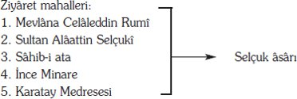

A. GENEL TANITIM
Genelkurmay Askeri Tarih ve Stratejik Etüt Başkanlığı Arşivi'nde, Atatürk'ün olduğu için özel olarak koruma altına alınan değerli belge ve dokümanlardan oluşan Atatürk Özel Arşivi'nde; kutu 7, zarf 9'da kayıtlı bulunan 24 adet defter, genelde küçük cep ve okul defteri türünden olmakla beraber, içerikleri yönüyle oldukça yoğun konuları kapsamaktadır.
Çoğunluğu eski yazı ile yazılmış defterlerin 8 numaralı olanı yeni yazı iledir. Ayrıca defterlerde yer yer Fransızca tutulmuş notlar ve açıklamalar vardır.
Defterlerin Atatürk'e ait olup olmadığı hakkında ilk bakışta karar vermek kolay olmaktadır.
Konu yönüyle ve üzerindeki tarih ve isimlerden Atatürk'e ait olmadıkları anlaşılan 12, 14, 23 nolu defterler dışında diğerlerinin, Atatürk'ün yeni ve eski yazıdaki özel tarz ve harf yazış sitilinden, kolaylıkla Atatürk'ün olduğu saptanabilmektedir.
Defterlerde işlenen konuların doğrudan Atatürk'ü ilgilendirmeleri, ayrıca yer, kişi adları ve olay ilintileri bu tanıyı kolaylaştıran etkenler arasındadır.
Kendileri küçük, fakat içlerinde işlenen konuları büyük boyutlu olan bu belge niteliğindeki dokümanlarda, yeni bir şeyler bularak, doğruları ve gerekli olanları yerli yerine oturtmak, bu alanda oldukça ciddi, derinlemesine ve özenli çalışmayı gerektirmektedir.
Elbetteki bu defterlerin tümünün birden ve ekiksiz olarak incelenmesi bir çırpıda ve az zamanda değerlendirilmesi olanaksızdır.
Bu bakımdan şimdilik ve ancak, defterlerin teker teker ele alınıp kısa bir tanıtımı ve dökümlerin yapılması ile yetinilmiştir.
Bu tanıtım ve dökümler yapılırken, 24 defteri içerikleri yönüyle üç ana bölümde toplamaya çalışmak yerinde olacaktır:
1. Atatürk'e ait olup da, O'nun tarafından önem verilen herhangi bir savaş veya askerî konuya ayrılmış ve bazen biribirinin devamı olan, tek konunun işlendiği (1, 3, 4, 5, 6, 7, 9, 11, 13, 15, 22, 24 nolu) defterler.
2. Başkası tarafından yazılıp dolaylı olarak Atatürk'ün defterleri ile birlikte saklanıp değerlendirilen (12, 14, 23 nolu) defterler.
3. Atatürk tarafından tutulan günlük ve önemli olayların yazılı bulunduğu çeşitlilik ve renklilik gösteren defterler.
Bu çalışmada diğerlerine oranla üzerinde biraz daha fazla durulan (2, 8, 10, 16, 17, 18, 19, 20, 21 nolu) defterler, içerikleri yönüyle çeşitli konuları iç içe kapsadığı için, ağırlıklı olarak ele alınmıştır.
Bu defterlerin içinde işlenen konulara ilişkin notların bazen tümü, bazen de önemli bir olayı veya görüşü yansıtan bölümleri, yalnızca doğrudan metin olarak olduğu gibi tek tek tanıtma bölümünde sergilenmeye çalışılmıştır.
Bu özgün metinler genelde eski yazı ile olduğu için, yer yer yeni yazıya çevirileri aynıyla yapılarak aktarılmıştır. Eski yazı ve yazım özellikleri ile yeni yazı farklılıkları bazı kelimelerin söyleniş ve anlamını zorlamakla beraber, bu çevirmede büyük zorluklarla karşılaşılmamıştır. Çünkü, bu notlar ağır bir Osmanlıca yerine, o günkü koşullardaki ve bugünkü konuşulan Türkçe'ye uzak olmayan, yalın ve gündelik konuşulan, belki de o dönem devlet adamları için çok yalın gelebilecek bir Türkçe ile yazılmıştır.
Ancak kitabın bu baskısında genç kuşakların bu metinleri tam olarak anlayabilmesi için, metinler bugünkü dile aktarılarak orijinalinin sonuna eklenmiştir.
Not defterlerindeki çok fazla kişisel; özelinde veya genelinde ancak bir başka kişiyi ilgilendirenlerle, çok yoğun siyasî, askerî ve yönetimsel olaylar arasında basit kalan konulara ilişkin notlar buraya alınmamıştır. Bu türdeki her bir defterin bir inceleme konusu olabilecek nitelikte oluşu bu zorunluluğu getirmiştir. Bu açıdan bakıldığında, çalışmaya yoğunluk ve ağırlık kazandıran ve özellik gösteren 9 adet defter bu çalışmaya esas alınarak işlenmiştir.
B. DEFTERLERİN TEK TEK TANITIMI VE ÖZGÜN METİNLERİ
DEFTER 1: Siyah bez kaplı 8x13 boyutunda, kapağında italik harflerle "Notes" yazısı bulunan içerisi kareli ve hanelere bölünmüş yaklaşık 40 yapraklı bir defterdir.
Çok okunaklı ince bir yazı ile yazılan bu defter, mürekkeple ve eski yazı olarak yazılmıştır. Defter sayfalarının bir yüzüne yazılmış biçimde on dört sayfası dolu, orta kısmındaki yaklaşık 10 sayfası boştur. Defterin son on beş sayfalık kurşun kalemle yazılan bölümünde sonradan bazı yerleri karalanarak iptal edilmiş durumda notlar vardır.
Baş kısmında mürekkeple ve özenle yazılan bölümler, Çanakkale'de kurmakla görevli olduğu ve komuta ettiği 19'uncu Tümen'e ilişkin personel isim, rütbe ve görevlerine ayrılmıştır. Çanakkale ile ilgili tarihi ve askerî araştırmalara iyi bir kaynak niteliğindedir.
Son sayfalardaki kurşun kalemle eski yazı yazılı olan notlar yine bu savaş sırasında, kendi tümeni, düşman birlikleri, gemiler vb hakkında özel bilgiler ile kısa kısa notlar halinde ve anımsatma notları şeklindedir.
DEFTER 2: Kenarında kırmızı renkli bez şerit üzerine dikiş çekilmiş, haki renk bezle kaplı 9x14 boyutundadır. Kareli kağıttan oluşan bu cep defteri 47 yapraktır. Notlar bazen kurşun kalemle, bazen mürekkep kalemle tutulmuştur. Bir önceki defter kadar özenle tutulmadığı yazı ve karalamalarından anlaşılan defterdeki tarihlerden, defterin içerisindeki notların 1319 (1903) yılını kapsadığı anlaşılmaktadır.
Defterin 45'inci sayfasındaki notların altındaki isim ve kayıtlardan anlaşıldığına göre, bu defterin tutuluşu sırasında Mustafa Kemal, Selânik'te, Erkân-ı Harbiye Namzedi ve Mülâzim-i Evvel (kurmay subay adayı ve üsteğmen)dir.
Kapak sayfasının arkasına:
"Mehmet Emin Efendi: Fâtih,
"Doktor Faik" yazılmış ve bir şiirden üç mısra yazılıp dördüncü mısrası hatırlanamamış noktalarla işaretlenmiştir.
"Cevher-i ruhumsun sen ey melek
Hüsnünün meclubuyum şahit felek
Çok değil bir kalbi meshûr eylemek
..........................................................."
H. "Viladimir Vikoviç" 4 gün kaldıktan sonra 21 Kânun-ı evvel 319 (3 Ocak 1904) Arasdavildık Yunan vapuru ile İstanbul'a hareket.
Üsküplü genç bir Bulgar çocuğu yanında bulunuyordu. Gündüz kendisi çıkmıyor yanındaki çıkıyordu.
Manastır Avusturya Konsolosu Makrem ile beraber geldi.
8
Kendi ifadesi (S.P. ...yetiş)den.
21 Manastır'dan 2 Bulgar jandarma firar.
Piristo "Bulgar Daskalı" 12 kişi ile 300 kişiyi isâli "sâid-i bahri" kafilesiyle görüşmek üzere civardaki tepeye gelmiş.
Bir Daskal'ın muhakemesi: İsmin nedir? Ölüm! ne dersin? Evet! Burası mahalli adalettir? "Kahkaha" sizde adalet var mıdır? Edepsizlik ediyorsun! Bu mevki-i adalette, ağzından çıkan söz adaletin olmadığını isbat etmez mi?
Samleker, Marn, Gra, kapaklı
H. "Korçikof"
I. Kılkış'ta bir eşkıya mezarı
II. Kılkış ahalisi Türkler... resimler.
I. Mezkûr kabristanın muhit parmaklığı kırmızı, yeşil, beyaz renklerle boyanmış, içinde genç bir kız statüsü.
II. Türklerin Bulgar ahalisine karşı güya revâ gördükleri mezâlimin fotoğrafları.
H-Korçikof: Bidâyet-i mes'elede (konunun öncesinde) köyleri resmi general üniformasıyla dolaşarak Bulgarlara ithâf eden nutukları vermiş ve bir günde ihtiyar Bulgarlardan iki ihtiyarı kesmeleri ihtimali fikrinden vazgeçirmek üzere mesâide bulunduğundan dolayı tevzî' olunan eslihayı kabûlde teennî gösterdikleri sebeb-i zâhiri göstererek kendi hamâsetle mülga etmiştir.
Selânik'te Millet Oteli'nde "Panayot M. Yordan" nâmında biri ile görüştüm. Fransız ve İngilizceyi nazarî ve pratik, Almancayı pratiksiz, lisân-ı Türkî'yi fevkal'âli fevkalâde güzel biliyor. Esnâ–yı musahabede L.nin şiddetle aleyhinde bulunur. Dinden bahsolunmamayı istirhâm eyliyordu. 3 saat mütemâdiyen görüştüm. Selânik'e geleli bir ay imiş, Fransızca muallimlik ediyor.
2, 3 şekilde mâlik imiş. Sultaniyyeden diploması olduğu gibi memâlik-i ecnebiyyeden (yabancı ülkelerden) birinde ikmâli tahsîl etmiş, İstanbul'da Ma'lûmat, İkdam muhâbirliğinde bulunmuş.
Otel hademesi "Dimitri" bu adamı mecnûn tanıtıyordu.
Bu adam erbâb-ı fesâddan (kötü kişi) ve Bulgar olsa câiz.
250 mevcutlu bir bölüğe, hedâyâyı şitâiyyeden bir 50 mintanın taksîmi; hepsi muhtaç, hepsi çıplak?
Mülâzım-ı sâni...
Nöbete gönderilen bir nefer: Af buyurun efendim sırtımda çamaşır yoktur paltomun altında setreye bakın "parça parça" öldürmek isterseniz gideyim.
Her ay yağmurlu ve soğuk
n. halas
Berber kalfalığı ile te‘mîn-i maîşet eden sâhib-i aile (3) biri "Hasan" Muâsırlar silâh altına alındığı zaman ilâve olacak yerde redif taburuna veriliyor. İlâve olan arkadaşları terhîs olduğu hâlde cihet-i askerîyyece hâli dikkat ve merhâmet olmuyor.
Sarakof: Bu günlerde (23 kilometrede) Livadya'ya (Köklü dâhilinde) gelip oradaki ahaliyi isyana tekrar sevk. (Resmî emir) Apustol, Argir, Sakra "Hepsi Daskal"
Kumandalarındaki 250 eşkiyayı taht-ı idâresine (idaresi altına) alacaktır.
23 Kânun-ı Evvel (16 Ocak): Selânik, Tugayda, bu sene çıkanlardan mülâzım Tahsin Isparta (Bursa mektebinden)
Namzet: Osman Sultanahmed, Faik Isparta'ya.
Kâzım Hosar: Bu cuma... cenazesi geçen.
318 (1903)'den İsmail Hakkı, vefat eden konsolos için (iyi oldu geberdi) demişler, Bulgar istemiş bunun için meçhûlî.
Hüsnü Efendi'nin adresi: Yeni cami kurbunda mevcûd telgraf şubesi kurbunda.
Sofya'dan bir Bulgarın Selânik Bulgar Kütüphanesi sahibine Cemiyetleri nâmına çıkarmakta oldukları gazetenin Selânik muhabirliği kendisine ihâle, (Bulgarca, Sırpça, Arnavutça, Lâtince olarak intişâr eden gazeteler asrı hâzıra Avrupa cerâidinde görülen takdîrâtdan Selânik Bulgar mektebinde kısmet-i haliye ve müstakbelesinden bahsediyor).
Vakayi-i mâziyye-i târihiyye-yi ihyâ (tarihin geçmişteki olaylarını yansıtan) cihetinde varaklı defne dalları...., üzeri resimli şekiller olmalı.
Bir Daskal'ın muhâkemesi: Hiç (bilmem) kelimesinden başka bir şey söylemediği hâlde...ın...acıdım sözüne mukabil. Ben de size acıdım.
Çok yağmurlar sebebiyle narenciyelerin pek cüz'î kısmını ekemediler.
"Te'sîs ve ihyâ!" kimi, nerede, nasıl?
Ma'kulât bidâyetde mahsûsâtın fevkine çıkacağı binâenaleyh ma'kulâtı mahsûsât ile terbiye esası. (Akla uygunluğun önce özelin üstüne çıkacağı, bununla beraber normal olanı akla uygun olanın özellerle terbiyesi esası)
Evvelâ Socialiste olmalı
Maddeyi anlamalı!
30 Kânun- Evvel:
Pazartesi Vodina'ya hareket J.A.B.
........................
Akif, Şevket, Vâsıf, Necmeddin, Mustafa, İzzet, Mehmed Behram, Mustafa Asım, Mustafa Selânik.
Hâlli tarzı M.
Vodina da 3'üncü Tb. 11 kadar zâbitle görüştüm hemen hepsi mükemmel, genç.
1 Malaası, 2 Sarmaras, 3 Vodina
1- T "Ladova Kida"
2- T - Ek
3- T - 2,5 da
Mülâzım-ı Evvel Ali Selim: 38 ile 3 bin gençle bir evde mukâbele. Kapıyı un çuvallarıyla kapamış evvelâ üst katı ihrâk edildiği halde münâsib
Vodina'da: Ceviz işi güzel bavul 3 mecidiye, baston 5:8 kuruş nalın 8:10 kuruş
1:4,5 mikyasında
Vodina Hükûmet Konağı'nın umûmi projesi Rezalkhawssez yoktur.
Martin
İlâvelere 500'er kat elbise redifler için tabur başına 800 mavzer.
450 bin "bazı zâbitânın hesâbbına nazaran".
Vodina-Vertikop-Ağustos-Karaferye-Gida-Kırcalar-Tekeli-Selânik.
H. 1500 hâne kadar, 2 büyük fabrikası var. Biri iplik, diğeri ipekli kumaş mendil, çarşaf... Kömür "çok miktarda" çıkıyor. İstasyonda büyük bir kaç kömür deposu mevcûddur.
Selanik'e: 31 Kânûn-ı Evvel 319 (13 Aralık 1904)
140 adet seri ateşli top
300 kadar topçu ve süvari hayvanı.
Abdi Kasım Ağa: Ahmed Süleyman, Musa, İzzet Şam, Arif bey Mülâzım Hamdi.
Kartal vâsıtasıyla "1"
6 Kânûn-ı Evvel 319 (19 Aralık 1904) Salı İkdâm.
Tırnova, Köstendil, Yanbolu
İlâve olunca
Maddesi bir misli tezâyüd etmiş (artmış).
Her fırkaya bir liva topçu veriyor. batarya 54 idi "162" şimdi hazarda tabur 114, tabur 64 idi.
Hidmet-i askerîyye 18:46'ya kadar. (Askerlik hizmeti 18 ile 46 yaş arası)
Boerlerin Grizon fabrikasına ısmarlamış oldukları toplar bu defa Bulgarlar tarafından alınmıştır. 7 Kânûn-ı Sânî.
Balkanlarda Bulgarların en hareketli olduğu günlere ilişkin notlarda "Panayot M. Yordan" adında birinin istihbarat elemanı olduğu ve diğer cephedeki Bulgarların örgütlendiklerinin, Balkanlarda, Sırpca, Bulgarca, Arnavutça, Latince olarak gazetelerin Avrupa'daki gazetelerden haberler ile Selânik civarıyla ilgili bilgiler verdikleri yazılmıştır.
İleriki sayfalarda birlikte olduğu bazı subaylar ve onların seçkin ve yetenekli gençler olduğuna ilişkin notların yanı sıra "Vodina" çevresinde olan bir olayla ilgili olarak bir arazi krokisi ile Vodina hükûmet konağının umumi projesi çi-zilmiştir. Vodina-Vertikop-Avustos-Karaferya-Gida-Kırcalar-Tekeli-Selânik-Tırnova-Köstendil-Yanbolu çevresindeki askerî yerleşmeye ilişkin notlarla devam eden defterde:
"Sabah, 8 Kanunusani Perşembe":
"Rumeli vilâyetindeki Rum ve Bulgar mekteplerine Lisân–ı Osmanî muallimleri tayin olunmuştur. Telmo'da icra edilmekte olan âsâr–ı âtika müddeti bir sene daha temdit edilmiştir.
Midilli ahâlisinden Anagnosti, zeytin mahsulünü ağaçlardan toplamak için bir alet icât etmiştir." gibi çeşitlilik gösteren notlar vardır.
Yine bazı yazısız krokilerden sonra Vostek vilâyetine ait bir kroki çizilmiştir. Devamında dünyadaki bazı önemli buluş ve yetişen mahsullerin oranına ilişkin genel kültür notları yazılmıştır. Bu da gösteriyor ki M. Kemal yalnızca ülke sorunları ile değil dünya ile de ilgilidir.
Boş bırakılmış birkaç sayfadan sonra bir şarkı güftesi olan:
"Hicaz-Ağır aksak" yazısı ile,
"Zülfüne dil besteler zülf-ü perişânım kadar.
Görmedim sayyâd–ı dil, alemde müjgânın kadar"
Bunun arka sayfasına:
"Suzinak, ağır aksak" yazısının altında;
"Bir gün ah ettimse cânâ suz-i nâk oldum yeter.
Sağ iken oldum helâk, sonra harâp oldum yeter,
Pây–i ağyar'a serildim, sanki hâk oldum yeter"
Ve yine suzinak makamında:
"Gözlerinden kıskanırken bir zaman dildârını
Gel de seyret yarinin bu devre-i idbârını.
Bir televvün bak ne hale koydu cism-i zârını"
güfteleri yazılmıştır.
Bir arka sayfada:
"27 Şubat 1319
Cuma, Saat: 07.00
Selânik'ten geleli 3 ay kadar oldu. Muvassalatımdan ilk günlerinde intizam-ı hayata bir çığır buldum zannında idim. Manen maddeten zebunu olduğum ıstırabımı mündefi olmuş gibi görüyordum. Lâkin heyhât!... Bu gün bilmem kaç yüzüncü defa olmak üzere yine kalbimin bütün şikâyet nalelerini işitmekle giryânım her vakit ki gibi bu dakika dahi...
M. Kemâl[4]
Karşı sayfaya hayranı olduğu ve çok etkisinde kaldığı Namık Kemal'in bir şiiriyle başlanmıştır.
Değişmez fen mi vardır müstakar eşya mı kalmıştır.
Delili sabit olmuş binde bir da‘va mı kalmıştır.
Deme insana ma‘lûm olmadık ma'nâ mı kalmıştır.
Eğer mechûl ararsan her işin encâmı kalmıştır.
Sipihrin bahtını ikbâlini hep pây–mâl ettim.
Hamiyyet mesleğinde terk-i evlâd ve ıyâl ettim.
Canımdan muazzezken vatandan infisâl ettim.
Sebat-ı arz hâil bir deni dünya mı kalmıştır.
Mey'i görmedim ömrümde bir inkâr eden mezheb
Fenâdır bir fenâ dünyada bir intâc her matlab.
Fırâk-ı hapsi, nef-i kadr ve nâmusumla gördüm hep.
Cihânın bir silâhından bana pervâ mı kalmıştır.
Musirrım sâbitim ta can verince halka hizmette.
Fedâkârın kalır ezkâr-ı daim kalb-i millette,
Denir bir gün gelir de sâye-i feyz-i hamiyyette,
Kemal'in seng-i kabri kalmadıysa nâmı kalmıştır.
"2 Mart 1320"
"Salı, Saat 8 dakika 30 günü" not edilmiş olan sayfada ise "üç gün evvel nâtamam kalan cümle hissiyatımın hangi tecelliyatıyla ikmal etmek lazım geldiğini düşünüyorum.
Bütün mevcudiyetimi yokluyorum. Anlıyorum ki hayatımda yakazât tevhidini icâb edecek hiçbir hal yoktur.
Lâkin anlıyorum ki safha-i kalbim her gün, her dakika yeni bir hiss-i elemin saha-i tecellisi oluyor.
Bu efkâr- mütezâidenin bâis-i yegânesi hissiyâtımın müphem medlütlere ait bulunmasıdır.
Müphem... O kadar müphem ki...
Sağ iken oldum harab helak oldum yeter.
M. Kemâl"[5]
2 Mart 1320
Salı sa: 1
Bu dakika zihnimde hiç bir sehabiyaru alem olduğunu kabûl etmek istemiyorum. Zira, işte şen, şâtır bir haldeyim.
Şimdi takdir etmek istiyorum ki saadet-i hayatiye, avan-ı şetaret süret-i telakkiye tabidir.
Bu nazariye umumî olmasa bile benim için takibi lâzımdır. Çünkü bu nazariye filesofi olmadıkça nefes-i vâpesin-i hayatıma kadar bir an sürür görmek müstahii olur.
M. Kemâl[6]
Aynı tarihin yinelendiği bir not ile devam eden defterin üç tarihli sayfasından bazı zamanlarda yazılan diğer özel notlarda; aylık bütçesine ait görüşlerle, Napolyon'a ait değerlendirmeler, akademideki 3. sınıfı bitirirken diğer sınıflardaki arkadaşlara karşı yapacağı bir veda konuşmasının müsveddeleri vardır.
3 Mart 1320 (16 Mart 1320)
Çarşamba sa: 3 gündüz
Uzun bir zanandan beri kendisiyle muhâbere-yi med'ar-ı tesliyet addettiğim bir zatın sükûniyle... muhârebedeki tekasülünü görmekle muazzab oluyordum. Bu gün o sükun-ı medidi ihlâl eden bir mektubun vürudu azâb-ı vicdanımı ta'dil etti.
Bir mektub.... evet; birkaç satırlık bir kağıt parçası.... Fakat sevilen bir kalbin ma'kes-i tecelliyatı perestiş edilen bir ruhun sahne-i sünûhâtı olduğu için bir kıymet-i câvîdâniyi şâmildir. Bir muhitde yaşadığım ve hissen fikren tevâfuk-ı tâmmın mevcudiyyeti hasebiyle haklarında kalbi muhabbetler beslediğim arkadaşlarımla mümkün olduğu kadar çok teâtî-i meveddet etmeyi arzû ettiğim gibi aradaki bu'd-ı mesâfe haylûletiyle yüzlerini göremediğim ve sözlerini işitmek mahzuziyyetinden mahrum bulunduğum kardeşlerimle de her türlü mevâni'in iktihâmiyle devâm-ı mürâselede bulunmayı netice-i emel bilirim. Zirâ bence rişte-i uhuvvet bir rabıta-i zerrin-i kudsiyyettir.
M. Kemal[7]
Dette Histoir Grec.
Victor Zürü
.........................................
F.W. Dutrger
Historicher Sıful-Ortlort
.........................................
Petite Bomain
8 Mart 1320 (24 mart 1904)
.........................................
Pazartesi sa:6
Bugün bütçemin hesabını rü'yet ettim.(göz gezdirdim)
Masârifâtı (masrafları) varidâtı (gelirlerin) pek ziyâde fevkinde (çok üstünde) buldum. Şimdeye kadar para çantama girip çıkan parayı hesap etmek hatırıma bile gelmemişti.
Fakat bu hesâbsızlığın netâyic-i vahîmesi (kötü sonucu) olmak üzere pek büyük ızdırablar altında ma'nen, mâddeten ezildim. Şimdi sarf olunan paranın mahal ve müddet-i sarfını irâe eden (harcama süresini bildiren) defterime baktığım zaman hareketimdeki adem-i intizâm nazar-ı dikkatimde tezâhür ediyor. (Düzensizlik ortaya çıkıyor) Her zaman bu defterin gözden geçirilmesiyle hissolunan nedâmetler ihtimâl tanzîm–i hatt–ı harekete medâr olur. (Davranışlarımın düzelmesinde yardımcı olur). Fakat ya henüz bunun te'sirini idrâk etmiyorum.(kavra-yamıyorum) Sebebi; mesârifatın fazlalığından ziyâde vâridâtın azlığıdır. (masrafın fazlalığından çok gelirin azlığıdır.)
M. Kemal
Bu yazıdan sonra herhalde başka bir zamana, ilişkin bir notta Napolyon'u anlatıyor.
"Napolyon; yıldırımlardan müteşekkil bir meşîmeden saha-i âleme düşmüş bir dâhidir.
Hayâtı top tüfek sadâlarıyla aks–i endâz bir sima... kanlı derelere sahne-i cereyân olmuş bir zemîn-ikbâl bulutlarına bir düşman ufuklar arasından geçti.
Lâkin heyhat dünyada, en az devâm eden saâdettir.
Bu parlak cihânın parlak güneşi olan o koca kumandanın Bahr-i muhîtin emvâc-ı siyahının müdhiş darbeleri altında inleyen bir kara parçasında itmâm-ı enfâs ettiğini görmek ne mâtemi bir hâldir.[8]
Yine bir başka zamana ilişkin notlarından anlaşılıyordu ki devresinin akademiden mezuniyetindeki konuşmasının müsveddesini buraya almıştır.
Arkadaşlar: Daha bidâyette tekmîl sınıfımız hazır olduğu hâlde sizi tebrik etmek isterdik. Lâkin rahatsız ederiz mülâhazasıyla o şeref-i tebrike kısmen nâil olunmuştu. Binâen-aleyh şimdi cümlemiz birden sizi tekrar tebrik etmek sûretiyle mahrûm kaldığmız o şereften hisse-i meserretimizi almış oluyoruz.
Arkadaşlar; madem ki askeriz... Madem ki hedefimiz bir âmal-i müstakbelemiz müşterektir, arkadaşlığımız kardeşliğin fevkinde bir kuvvet ve irtibâta mal olması pek tabiidir. Herhalde hepimiz kardeşiz ve bu uhuvvetimiz ebedi bir hayata mâliktir.
Mesleğimizin te'sir-i kudsiyetiyle bundan evvel de kalpler yek diğere karşı bir hiss-i samimiyyet ile mâlî idi. Fakat mâa-t–teessüf zaman ve mevki' bu meveddet-i kalbiyyenin alenen tecellisine müsâid fırsatlar bahşetmiyordu.
İşte şimdi o kıymetli fırsatlardan birine mâlik olduğumuz için bilseniz ne kadar mes'ûduz.
Arkadaşlar mekteb ahvâli, mekteb hayatı, sizce de ma'lûmdur. İnsan bu sıkıcı muhitin bin türlü âlâmı altıda ezilir. O âlemlerin tahfîfi...izâlesi için mutlaka samimi bir rûhun...hissen müşterek bir kalbin sünûhât-ı tesliyetine arz-ı ihtiyaç olunur. Fi-l-hakika insan insan oldukça bu zümre-i beşeriyyetin fevkine çıkamamak acziyle çırpındıkça mümkün değil bu ihtiyaçtan vâreste olamaz.
Binâen-aleyh sizin gibi efkar ve hissiyâtı âlî daha birçok hakiki arkadaşlar kazandığımızdan dolayı biz de şâyân-ı tebrikiz.
Uhuvvetimizi ilan ve ifhama medâr olan bu kıymetli zamanların bizce pek mes'ud dakikalar olduğuna emin olabilirsiniz arkadaşlar.
1. Paranın kıymeti
2. Namzed üçüncü sınıftan çıkarken diğer namzed sınıflarına veda.
3. Rusların mağlubiyetinden dolayı ma'nen, maddeten izhâr–ı memnuniyet etmeliyiz.
| Midilli'de | Mesudiye | Zırhlı |
| Midilli'de | Abdülmecid | Kruvazör |
| Midilli'de | Hamidiye | Kruvazör |
| Midilli'de | Asâr-ı Tevfik | Zırhlı (tamirde) |
Bundan başka Kiyel'de Krup tezgahlarına ve Kramp tezgahlarına siparişi der-desti müzakere olan "4' zırhlı; siparişleri verilmiş olan "12" torpido muhribi ve usul-ı cedideye tahvilleri der-dest-i hitâm bulunan Feth-i Bülend, Muin-i Zafer, Avn-i ilâh kruvazörleri Ansaldo Fabrikası'nın insa etmekte olduğu "7" toprido çeker.
50-60 torpido sefinesi "Mevcûd"
Nağra burnunda: Mahmudiye, Orhaniye, Aziziye, Osmaniye tâ'mirleri der-desti tezekkür.
Ayrıca o günkü dünya ve Osmanlı donanmasındaki gemiler ile, dış ülkelere ısmarlanan gemilere ilişkin bilgilerin yanı sıra, torpiller, zırhlılar hakkında bilgi verilmiş, şekilleri çizilmiştir. Bu notlar mürekkepli kalemledir. Bu 4 sayfalık notun altındaki imzadaki isim Mehmet İlhâmi'dir. "Kamer kıraathanesinde yazıldı" ibaresinden ve altındaki imzadan anlaşılmaktadır ki Mustafa Kemal'in müsvedde çalışmalarıdır.
Bundan sonraki bölümlerde, 1905'te başlayan Rusya ve Japonya arasındaki savaşta Japonların daha etkin olduklarına ilişkin notlarla, Japon komutanların adları yazılmıştır. Bu savaşla ilgili olarak önemli bir not sondan 13'üncü yaprağa yazılmıştır.
"Şimdiye kadar Avrupa'nın bilmediği bir unsur meydana çıktı.
Kirno Muharebesi Japon askerinin kıymet-i askeriyesi nokta-i nazarında parlak safhalar vücuda getirecek" notundan sonra yine bir kroki vardır. Krokinin başında ise "Yeni Japon tabiyesi" yazılıdır. Diğer iki sayfada da Japon savaşının kritiği yapılmıştır.
Defterin son bölümüne önce "Meşhur Osmanlı Kumandanları" başlığı altında yeni bir eserin hazırlık başlangıcı olan ve Makbul İbrahim Paşa ile Lala Mustafa Paşa hakkında özet bilgiler de kaydedilmiştir. Bundan başka kimse yazılmadığından, bu konudan vazgeçilmiş olduğu anlaşılmaktadır.
MEŞHUR OSMANLI KUMANDANLARI
Makbûl İbrahim Paşa
(901-942)
Sultan Süleyman-ı Kanuni devrindedir.
Parga şehrinde tevellüd etmiştir. Bir gemicinin oğlu olup dem-i şebâbeti (gençliği) korsanlar elinde geçti. Sonra Manisalı bir hâtun tarafından satın alındı.
Vezâreti zamanında Mısır'ın tensikine me'mûr oldu. (Düzenlenmesi için görev aldı)
Mohaç Muhârebesi'nde ibrâz-ı dirâyet etti. (Yeteneğini gösterdi) Düşmanı tertibât–ı ma'kulesi akıllıca önlemler sayesinde mağlub etti.
935'te Viyana seferinde hazret-i padişahın maiyyetinde bulundu.
940'da Bağdat Valisi Zülfikâr Han mezheb-i Şîi'yi terk ettiği ve Bağdad'a mikdâr–ı kâfi asker gönderilmesini istirhâm etmişti. İbrahim Paşa gitti. İran şahıyla muhârebe ve Şirvan'ı zapt etti.
Mûsikîyi sever, 4 lisan tekellüm (konuşur) eder. Cazibe-i nutkiyyeye mâlikti. (Güzel söz söyleme yeteneği vardır) Emsâli ile İskender'in seferlerini tetkik ve mütâlaa ederdi.
Mısır ve İran seferlerinde siyâset, Viyana ve Mohaç seferlerinde besâlet izhâr etmiştir. (Yetenekle başarı göstermiştir.) Medfeni (mezarı) Galata'da Cân Fezâ tekkesindedir.
Lâlâ Mustafa Paşa
(915-988)
"Bosna'da tevellüd etti. Vezir Hüsrev Paşa'nın biraderi olmak münâsebeti ile Sultan Süleyman zamanında saraya idhâl olundu. Sonra Sultan Selim–i sâninin lâlâsı ta'yin oldu.
Yemen uygunsuzluğunun teskini için rütbe–i vezâretle gönderildi. Kıbrıs seferinin kemâl–i muvaffakıyyetle icrâ eyledi'! yazıldıktan sonra aşağıdaki notlar vardır. Anlaşılıyor ki M. Kemal bu konuyu burada bırakmıştır.
"2'inci Ordu'ya mensüb 1'inci Avcı Taburu Binbaşı Ahmed Kemal Efendi Kolağası Rusuhi Efendi
...Yüzbaşısı Mehmet Şükrü Efendi, Mustafa Efendi Sıtkı Efendi, İkinci Bölük Yüzbaşı Naci Efendi, Üçüncü Bölük Yüzbaşı Ahmed Hamdi Efendi, Dördüncü Bölük Yüzbaşı Hamdi Seyid Efendi"
Defterin son sayfalarında çok saydığı ve takdir ettiği bir gazeteciye mektup müsveddesi vardır. İsim olmadığı için bu yazarın kim olduğu belli değilir (Ek: 5). Osmanlı yazı kurallarının uygulandığı şaheser bir metindir.
Bunun altında kimin için yazıldığı belli olmayan bir dilekçe müsveddesi vardır. Bu dilekçe müsveddesi o dönemde devlete ilişkin yazışmalarda ne denli ağır bir Osmanlıca kullanıldığını da göstermesi bakımından önemlidir.
"Bendeleri, bu sene vefâ mektebi i'dâdi-i şâhâneyi tahsilini ikmâl ile neş'et edenlerdenim.
Padişah-ı terakki-perver ve Şehr-yârî meâli–güster velînîmet–i muuazzamamızın bütün ümmet-i İslâmiyyeye şamil in'âm–ı celîlesine müstagrık himâyet-i zıll-ullâhîlerine mazhar olarak iktisâb–ı feyz ve irfân eylediğinde sa'y ve gayretimin hidemât her yönden de istihdâmım kabiliyyetimi iktirân–ı tenmiye-i âmâl–i kemterânemi teşkil etmekte idi.
İcabât–ı sadâkat ve ubûdiyyeti ibrâza nezâreti devletlerinde istihdâmı kem–terânem idi.Farize–i vicdâniyem olan hidemât–ı memlukânemi hüsn-i ifâya medâr–ı kavi teşkiline en müsâid olduğunu düşünerek hâk-pâ–yı nezâretpenâhîlerine mürâcaata cüret ve aklâm–ı muhtelifeden bir menâsibine kayıt ve kabûlüm ile taltîf ve tesrîr buyurulmaklığımı istirhâma cesâret eylerim." Bugünkü dile aktarımı şöyledir:
"Bendeniz bu yıl Vefa Lisesi'ni tamamlayarak mezun olanlardanım.
İleri görüşlü bir padişah, yüce anlayışlı hükümdar ve en büyük koruyan ve kollayıcılığı ile bütün müslüman vatandaşları ulu gölgesinde korumayı sağlayan olarak sizden eğitimi tamaladıktan sonra hizmetteki yeteneklerle başarımın gözükebilmesi ve gayretle çalışma ve hizmet için görevlendirilmeyi istemek düşüncesindeyim.
Sizin döneminizle hizmetinizde olarak bağlılık ve kulluğumu göstermek düşüncesindeyim. Vicdani görevim olan hizmet etme amacımı dürüst olarak yerine getirmeye yarayacak bir yere atanmam için ayaklarınıza kapanıp saygılar sunarak başvuruya cesaret edip uygun görülecek bir yere kabulüm ile beni sevinç ve onurlandırmaya emir buyurmanızı dileme cesaretinde bulunuyorum.
DEFTER 3: Sarı karton kapak üzerine, kırmızı kenarlı orta boy etiket yapıtırılmış, etiketin üzerinde el yazısı ile Fransızca "Fortification" (yerleşme) yazılı 10x15 ebadında 18 yapraktan oluşmuştur.
Üst yazısından da anlaşılacağı gibi defterde askerî bir yerleşmeden; yani topçu sınıfının konuşlandırılmasından söz edilmekte, sayfa aralarında yer yer elle çizilmiş düzenli ve plânlı şema ve krokiler görülmektedir.
Topçu birliklerinin savaş düzeni ve örtünme ile yerleşiminin anlatılarak, topçuluk hakkında geniş ve detaylı askerî bilgilerin verildiği defter, "Hücum" başlığı ile başlamaktadır. Bir askerî harekâtta uyulması ve uygulanması gereken tarzlar anlatılmakta, çeşitli durumlardaki yeni gelişmelere de değinilerek, mevzileniş ve yerleşimler şemalarla gösterilmektedir.
Hücum için gerekli hazırlık ve önlemlerle birlikte hücum şekilleri hakkında kısa fakat özlü olarak gerekenlerin yazılmış olduğu defterin tamamlanmamış olduğu, sonundaki "Mâbâdı diğer defterde" yazısından anlaşılmaktadır.
DEFTER 4: Bir önceki defterin devamı olan defter, aynı renk aynı boyutta olmasına rağmen, 12 sayfalık tek forma halindedir. Bu defterin konu başlığı ise; "Taarruz-u Sevkulceyş"tir. Yine bir önceki gibi askerî harekâtta taarruzu konu olarak almakta, aynı zamanda savunma hakkında ve çekilme konusunda da örneklemeyle bilgi verilmektedir.
Ayrıca defterde orijinal bir konu olarak o döneme ilişkin, saatlerle ilgili ve her ayın on beşinci gününe göre güneşin batış saatlerini belirten bir çizgelge de konmuştur.
Notların ara yerinde 7'inci sayfada Fransız alfabesine uygun olarak Rumca bir halk şarkısı sözü de metin olarak Atatürk tarafından deftere yazılmıştır.
"Köpükten yaratılmış Pepinam, sevgilim
İçimde bir volkan misali alev yaktın.
Pepina,
Ah Pepina,
Ah Pepina,
Sana tapıyorum.
İşvelim, şimdi gel, şimdi gel kollarıma"
Bu notlardan da anlaşılmaktadır ki Mustafa Kemal çocukluğunun geçtiği Selânik'te en az konuşacak ve şarkı söyleyebilecek kadar Rumca'yı öğrenmiştir.
Rumca alfabeyi hiç bir yerde kullanmadığına ve burada da Fransız alfabesini kullandığına göre Rumca yazıyı öğrenmediği anlaşılmaktadır.
Defterin son sayfalarında ise Amerika Birleşik Devletleri, Japonya vb devletlere ilişkin görüşler ve çeşitli askerî bilgiler yer almaktadır.
DEFTER 5: Yine bir öncekiler gibi tek ve uzun fakat yeni bir konuya ayrılmış olan bu defter, 11x15 boyutunda, açık mavi renkli, karton kapaklı, 16 yapraktan ibarettir. Konunun önemine bağlı olarak mürekkepli kalemle yazılmıştır.
"Osmanlıların Ruslarla Olan Esfar ve Muharebatı" (Osmanlıların Ruslarla olan seferleri ve savaşları) üst yazısı ile tutulmaya başlanan defterde, 1081 yılından Nizam-ı Cedid'in kuruluşuna kadar Türk ordularının Rusya ile yaptığı önemli savaş ve olaylar (1081, 1122, 1201, 1221, 1224) anlatılmakta, bu ilişkilerin yorumları yapılmaktadır. 25 sayfası yazılmış, geri kalan 7 sayfası boş olmasına karşın, bu ilişkilerin ancak bir kısmı bu defterde olup diğer kısımları sonraki iki deftere aktarılmıştır.
DEFTER 6: Bir önceki defterle hem şekil hem de konu yönünden benzerlik ve devamlılık gösteren bu defter, tamamen doldurulmuş ve mürekkepli kalemle yine eski yazı olarak yazılmıştır. Askerî konuları içeren defterde savaşlar hakkında bilgiler verilmiştir. Savaşlarla ilgili ve askerliğin özel branşları ile ilgili bölümler çok geniş olduğu için metin olarak bu kitaba alınmamıştır.
DEFTER 7: Yine Osmanlı-Rus Harplerini konu olarak alan bu defter, diğer ikisinin devamı ve sonuncudur. Bir öncekilerden farkı, kapağının yeşil oluşu ve 23 sayfasının yazılı diğer sayfalarının boş oluşudur. Bu üç defter askeri uzmanlarca tek başına bir bütün olarak yayınlanabilir.
DEFTER 8: Dışı siyah içi yeşil renkli cilt beziyle kaplanmış karton kaplı, 11x15 boyutundaki defterin diğerlerinden farklı yanı, yeni yazı ile yazılmış olmasıdır.
Atatürk'ün, kendisinin olan kol düğmeleri, kravat iğneleri ve benzeri kıymetli eşyasının dökümünü yaptığı bu özel not defterinin kapağının üstündeki etikette yeni yazıyla "Mücevherler" başlığı vardır.
İlk sayfası kravat iğnelerine ayrılan bu defterde, iğnelerin sayısı verildikten başka, tahminen bu defterin yazılışından epeyce sonra, eski yazı ile ve kurşun kalemle; "Dahiliye Vekili Şükrü Kaya bey'e bir saat kösteği verildi" yazısı düşülmüştür. Bu notun altındaki tarih ise "5.2.1932"dir.
Yaprakların birer yüzüne yazı yazılmış olan, defterin 7 sayfası dolu diğer kısmı boştur.
Üçüncü sayfada 7 adet, beşinci sayfada 3 adet kol düğmesi; yedinci sayfada 3 adet saat; biri kol diğerleri cep saatleri, dokuzuncu sayfada 3 adet saat zinciri; on birinci sayfada 4 adet köstek; on üçüncü ve en son yazılı sayfaya kaydettiği; en son ve en kıymetli mücevheri olarak değerlendirdiği anlaşılan "İstiklâl Madalyası"dır. Bu sayfadaki yazının büyüklüğü ve rahat bir şekilde yazılışı da bu kanıyı kuvvetlendirmektedir. Osmanlı Ordusunda general olan unvanlı bir subay, ayrıca Türkiye Cumhuriyetinin kurucusu ve ilk Cumhurbaşkanı olan bir devlet adamının tüm mücevherlerinin bu kadar oluşu da dikkat çekicidir. İstiklal madalyasının kaydının 1924'ten sonra yazılmış olması gerekir.
DEFTER 9: Koyu mavi cilt bezi ile kaplı, 10x16 boyutunda ve 4 formadan oluşan çizgili ve hafif sarı renkli yapraklardan oluşan defterin içindeki tarihlerden, anlatılan olay ve konulardan anlaşılmaktadır ki, defter, 1313 (1897) yılında cereyan eden 1897 Türk-Yunan Harbi ve Osmanlıların bu harpte, askerî birliklerinin Trakya'daki yayılışını kaydetmek için tutulmuştur.
Mürekkepli kalemle ve düzgün bir eski yazı ile tutulan defterin üç forması dolu, bir forması boştur. Deftere, "Harekâtta Osmanlı Ordusu'nun Yayılışı" başlığı konularak başlanmış; "ordu başlıca iki kısımdır: 1. Tesalya Ordusu, 2. Epir Ordusu"dur diye bir ayırım yapıldıktan sonra, orduların kuruluşlarının anlatımına girilmiştir.
Mustafa Kemal'in daha 17 yaşında olduğu ve Manastır Askerî İdâdisi'nde okuduğu yıllarda cereyan eden 1897 Türk-Yunan Harbi, Atatürk'ü herhalde çok etkilediği, bölgenin ve savaşın çok karakteristik oluşun nedenleri ile, bu savaşı ve savaştaki gerçek durum ve olasılıkları sonraki yıllarda bir defter halinde toplamayı amaçlamış olmalıdır ki, konu bir bütün olarak sonradan edinilen diğer bilgiler ve deneyimlerle birlikte bu defterde işlenmiştir.
Defterin tutuluş tarihine rastlanmamakta, ancak defterin Atatürk'ün kurmay olduktan ve çeşitli görevlere geldikten sonra tutulduğu izlenimini vermektedir. Kurmaylığının ilk yıllarında Balkanlar da (Selanik'te) görev yaptığı sırada bir plân tatbikat dosyası olarak hazırladığı izlenimini'de vermektedir. Defterde, 1897 Türk-Yunan Savaşı sırasındaki yerleşme ve savaşın cereyanı ile savaş sırasındaki muharebeler "askerî meseleler" olarak alınmıştır.
24 mesele olarak belirlenen durumlar ile, bu meselelerin çözümleri anlatılarak esas durumda ne yapılmış olduğu karşılaştırılmıştır.
Ayrıca muharebelerin oluşumu sırasında yapılan uygulamaların hataları da belirtilmiş olduğundan, bu şekliyle defterin bir askerî ders kitabı niteliği de ortaya çıkmaktadır.
Yine bunların yanı sıra savaş içerikli defterin bir bakıma "Harp Ceridesi" niteliği de belirginleşmektedir.
Şunu burada söylemekte yarar olacaktır ki, 1897 Türk Yunan Harbi üzerine çalışanlar ile bu konuda yeniden çalışacakların, elimizdeki 9 nolu defteri esas kaynak olarak almalarında yarar olacaktır.
Defterin son paragrafının; "5'inci Fırka Kumandanı, 5'inci Fırka'nın saat 06.00'da Kareli civarında toplanmasını emrederek âtîdeki emri verdi" cümlesi ile bitmesi ve diğer sayfalarınını boş olması defterin tamamlanmamış olduğu fikrini de ortaya çıkarmaktadır.
DEFTER 10: Siyah cilt bezi ile kaplı, 8,5x13 boyutunda, kareli kâğıttan onar yapraklı beş formadan oluşan bu cep defteri; "4 Nisan 325 saat 8.15" tarih notu ile başlamakta, "Beylerbeyi'nde altıncı Daire Reis-i Sabıkı Mehmet Ali Bey hanesinde" yazısı düşülmüş olduğu görülmektedir.
Aynı sayfanın altında ve tersine olarak sabit kalemle; "1'inci Mülâzim Nazif" yazısı vardır.
"4 Nisan 325 (1909) Cumartesi saat 8.15
Beylerbeyi'nde Altıncı Daire Reis-i sâbıkı Mehmet Ali Bey hanesinde
(1'inci Mülâzım Nazif)
Ekmekçi Kolu:
1. Kolağası
1. Mülâzım
9. Nefer
Erzak kâfilesi 6 bin kişilik 10 günlük
Orada ictimâ eden taburların erzakı yoktur. Levâzım reisi para ile idâre edilip arkadan yetiştireceğini söylemiş.
Taburları orada zarûrete düçâr etmemek üzere karargâhın hareketi lâzımdır.
4 Nisan
1. Serez ve mühim diğer merkezlerden: Ordu kumandanına telgraf.
2. Münâsib görülecek noktadan ileriye ma'lûmat.
3. Serez'de karargâhın binekleri hakkında. Tahkikat (Arkadaşlardan biri ile, İbrahim Bey)
4. İnzibat ve namâz ve nasâyihi lâzima-i şer'iyye îfâ ettirilmesi hakkında emir. (Tertip düzen ve namaz ve gerekli dini nasihatlerin verilmesi hakkında emir)
5. Kuvve-i mevcûdelerini ve derece-i ihtiyâcları kıtaâttan sorulacaktır. (Halihazırdeki mevcutlar ile gereksinimleri kıtalardan sorulacaktır.
6. Fırka kumândanı tarafından kıtaâta bir beyânnâme. Maksad, gayret hamiyyet, İstanbul'dakilere aid hiç kimsenin hiç bir sözünün dinlememek, başlarına
Not:
1. Erzak için Refik
2. Hattın muhâfazası ordudan te'mîn ettirilmeli.
Sarık saran hafiyelerin din perdesi altındaki ilkâatı menfaatten başka bir şey değildir. Din, şeriât, hamiyyet-i vataniye menfaat-i hakikisi, Kuran'ı Kerim'in ahkâmını ve onun ahkâm-ı icâbatından olan kanunî esâsiyi muhâfaza etmektir. İşte bizim hareketimiz gibi.
7. Nizam-ı harbi tetkik.
Fırkanın idâresi için tertib edilen tabur harekâta iştirâk edeceği tabiidir.
Bunların idâresi için ayrıca bir idârenin kumandanlıktan istenilmesi bu husûs hakkında İdâre Reisi Kolağası Ahmet Efendi ile görüşülecektir.
Fırka için muktezi erzak (gerekli olan yiyecek) Ahmet Efendi tarafından sevkiyâta yazılacağı gibi.
Te'kîden de ordu kumandanlığına mürâcaât edilecektir. Ahmet Efendi ile bu bâbda istişâre edilmesi husûsunun unutulmaması.
4 Nisan 325
Ne gibi erzak aranılacağı tabii izâh edilecektir.
Ali Paşa Hazretlerine
Umûmî namâz makam-ı dindarânesi.
8. Bizim Çatalca İstasyonu'na muvâsalatımızda orada bulacağımız piyâde, süvâri, topçu mikdârı (Ahmet Efendi'ye).
9. İstanbul ahalisine bir beyânnâme: Maksadımızın kanûna taarruzu men. İdâre-i Osmaninin kanûn dâiresinde tamamen tatbiki (Hakkı Efendi'ye)
10. Çorlu sevk me'mûruna geçen taburların numara ve mevcûdunu bildirmek için kendisine emir.
Eğer defterden sayfa eksik değilse, ikinci sayfaya; "Ekmekçi kolu" başlığının konulduğu defterin devamının ve tümünün, 31 Mart 1908 olayı için Mahmut Şevket Paşa komutasındaki birliğin harekât sırasındaki yürüyüşü ve bu yürüyüş sırasındaki eksiklikler ile, birliklerin İstanbul'a yerleşmeleri, görev bölüşümleri, durum saptamaları ve dönüşle ilgili notlara ayrıldığı anlaşılmaktadır.
Kısa kısa notlar halinde yazılan diğer konular, bu defterin Mustafa Kemal tarafından bir akıl defteri olarak tutulduğu izlenimini vermektedir.
İstanbul'a gönderilen birliklerden 1'inci mürettep Tümeni'ne ait kuruluş, personel sayıları, oradaki uygulamalarda kullanılan birlik ve katılan rütbeli personel hakkında kesin bilgiler bulunmamakla birlikte, defterde 31 Mart Olayı ile ilgili birçok ayrıntıları dolaylı olarak bulmak olanağı vardır. Birliğinin hareketinden İstanbul'a varıncaya kadar ki zaman içinde geçen olay ve işlere ilişkin çeşitli notlar vardır. Özellikle defterin dördüncü sayfasına düşülen notlar arasındaki "Sarık saran hafiyelerin din perdesi altındaki ilkaâtı, menfaatten başka bir şey değildir. Din, şeriât, hamiyet-i vataniye muktezâsı hakikisi, Kur'an-ı Kerim'in ahkâmını ve onun ahkâm-ı icabâtından olan Kânun-u Esâsiyi muhafaza etmektir. İşte bizim hareketimiz gibi" cümlesi ilginçtir.
Bu cümle Atatürk'ün o günkü koşullarda bu olaya bakışı ve amacı hakkında en sağlam hüküm olarak belirgin bir şekilde bize bilgi vermektedir.
Sekiz ve dokuzuncu sayfalarda Fransızca bazı notlar vardır. Bu notlarda; "Muhakkak ki meşrutiyet büyük güçlük olmadan, bütün yabancılar ve ülke için tehlike olmayacaktır. Emin olunuz" ayrıca; "Ordunun genel hedefi; üç kolordu olacak, despotizme ve İstanbul'a karşı hareket edecek, reform yapacak" denilmektedir.
"a'tat les
h.aud.enr.1'indée general de l'armée
De trois. Corps apprauche vers comet.est contre despotisne et fomoruo tisme.il va reformer.
Sirment loe constitulmen complete sans frand diffuculde sajez sur il n'y aurd. aucrme.
1. Vaz'iyet, tabur adedi, 2'inci kuvveti, misâfirleriniz ve haklarındaki muâmelenize dair pek kısa ma'lûmat.
2. Ta'cîli lâzım ihtiyâcınız var mıdır.
3. Karargâh Hadımköy'ünde te'sis edilecektir. Zâbitân ma'rifetiyle tedârikâtı lâzımede bulunulması. (Subaylar aracılığı ile gerekenlerin sağlanması)
4. Kıtaâtı karşıdan gelenlerle kat'iyyen ihtilâtda (Birlikleri karşıdan gelenlerle kesinlikle karşılaştırmak gerekir)
5. Taburların akşam yoklamalarının usûl-i sâbık vechile eski usulle icrâ'sı (yapılması) ve ferâiz-i dinîyelerinin (dini görevlerinin) muntazaman îfâ ettirilmesi ve karşıdan gelenlerle sûret-i kat'iyyede ihtilât ettirilmemesi husûsunu liva kumândanına sûret-i husûsiyyede (özellikle) söyleyiniz.
- Bu misillü gelecekler hakkında aynı muâmeleyi tatbik edin"
Harekât Ordusu'nun İstanbul'a yürüyüşüyle ilgili olarak düşüncelerini yansıtan bir yazının ise, on ikinci sayfada "Dahiliye" başlığı altında (Ek: 6) yazılmış olduğunun görmekteyiz. Bunu izleyen sayfalarda Harekât Ordusu Kumandanlığınca ileride yayınlanacak olan bildirgenin ilk karalamaları da (Ek:7) vardır.
Bu bildirge taslağının, Harekât ordusu karargâhı dolayısıyla Mustafa Kemal'in ilk demokrasi bildirisi olarak almak yerinde bir saptama olacaktır.
Bu yazının hemen altında devam olarak İstanbul'daki konuşlandırma notları vardır. Bu notlar çok önemlidir. Çünkü Harekât Ordusu'nun o günkü İstanbul'daki konuşlandırmasının kayıtları ile birlikte yer yer Mustafa Kemal'in görüş ve yorumlarınında bu yazışma notları arasına serpiştirilmiş oluşu bu defterin gerçek ağırlıklı yönüdür.
"Süferâ ve misafîrîn-i ecnebîyyenin bi-huzûr (Elçilikler ve yabancı konuklar huzursuzdur)
6. Meb'usan milletle vükelâ-yı devlet ve zâbitan ve efrâd-ı şaire-i hamiyyetin mevcud muhteremlerinin na-hâk yere akıtılan ma'sum kanların sürüyüp getirmesiyle mevki-i iktidara kâid (tutunmuş) olan bu na-meşrü' ve kanlı kabineye be-heme-hâl sukud ettirilecek ve bütün milletin ve binâen-aleyh bunların muhterem meb'uslarının i'timâd ve emniyyet-i tammesini hâiz olanlar reis-kâra ık' ad olunacaktır.
7. Vükelâ-yı milletin ve devletin nüfuz ve hayatları hakkıyla te'min edilecektir.
Fatih, Samatya, Ramiz cihetleri kumandanı Erkân-ı harb Binbaşısı Musa Kâzım Bey Mürettep 2'inci Alay Kumandanı.
Karargâh Fatih
1'inci Tabur Ramiz
2'inci Tabur Samatya (367) Müsâdemelerde
3'inci Tabur Fatih (300) 60 kadar şehid ve yaralı
Ahâli ile temas eden yoktur. Şüpheli adamları tarassud için kumandanlar tarafından gönderilen husûsi bazı efrâd.
Softaların ahvâli fenâdır. Der-dest (tutuklanmış) olanlar üzerlerinde silâh çıkıyor.
Buradan sevk olunan mevkûflar 1000'den fazla "Davutpaşa gayr-ı kâfi"
- Davutpaşa'da muhâfız bir bölük.
- Samatya ahvâli iyidir (Kumkapı, Yedikule karakollarında birer bölük, 2 Samatya karakolunda)
Efrâdı teslim alınan
Altı Mermer
Koca Mustafa Paşa
Seyyit Nizam Boşdur
Mevlâna Kapı
Bu mıntıka için en iyi merkez Kumkapı olması daha muvâfıktır.
Fatih telgrafhanesinde bir telgrafçı lâzım
(S. Yedinci Alay Süvari Binbaşı Sabit) Selimiye
Beyoğlu ciheti: Mir-livâ Şevket Paşa, Kâzım Bey
Kabayut'da:
Kavala Redif Taburu
Manastır Redif Taburu
İkinci Ordu'dan bir batarya (7'inci Seyyar 2. Tb, dan)
7'inci Süvari Alayı 2'inci Ordu'dan
Onuncu Süvari Alayı (2'inci Ordu'dan)
Bir otomobil
Taksim civarında: 24/1, 20/1, 36/1, 10/4 "bir bölüğü Mekteb-i Harbiyye'de" 81/2 Makineli Tüfek Bölüğü. Mekteb-i Harbiyye'de:
İkinci Ordu'dan iki batarya "7'inci Alay, 2 Tb.dan"
Üçüncü Ordu'dan iki cebel bataryası. (Dağ bataryası)
Onuncu Alay'ın 4'üncü Taburu'ndan bir bölük Üsküdar'a gitmek üzere Kabataş'a gönderilen:
Piyade 18 tabur
Manastır gönülleri
Bir otomobil Mekteb-i Harbiyye'de karargâhtadır.
İkinci Ordu'nun İstanbul Cihetindeki Kuvvetleri
Rami ve Fatih ve Unkapanı ve civârında:
2'inci Alay (3'üncü Tabur)
Telgraf müfrezesi (bu gün Ramiz'den Harbiye karargâhına aldırılıyor):
Otuz kişilik jandarma müfrezesi.
Makriköy ve Bab-ı âlî civârında: 1'inci Alay (3. Tabur)
Ayestefanos'ta: 9'uncu Süvari Alayı (Meclis-i Meb'usân)
Kavala Ali Hikmet Bey'e
Manastır
Köprülü
Drama: Ordu kumandanı nâmına topçu kışlası Kumandan
Ohri: vekîli Erkân-ı harbiyye Yüzbaşı Osman.
Manastır gönüllü taburuna şifahen (sözlü emir)
Kısmen ve pür kısmen trenle
18'inci Nişancı
....Redif Süvari Mülâzımı Ahmet Efendi.
Hüseyin Efendi'ye
Kumandan paşaya: İki binek
Ve bendeniz Eyüp: İki binek
Hazırlanıp Aziziye Karakoluna gönderiniz.
Mayıs nihâyetine kadar Jandarma Efrâd-ı Cedide Mektebi (Yeni asker okulu)
Kumandanlığına kimsenin ta'yîn edilmemesi
Vasıf
Sirkeci :
İzmir Oteli müste'ciri Ahmet Efendi vâsıtasıyla
Mülâzım Eyüp Efendi'ye.
4 Nisan Selânik'ten hareket
9 Mayıs Selânik'e avdet
Galata köprüsünde 3 tüfek
Köprüde iki mitralyöz.
Gülhane'deki Kuvvet:
11'inci Alay 3'üncü Tabur 2'inci Bölük Cephane karakolunda, Gülhane Hastahanesi (250)
4'üncü Bölük saray içinde 3'üncü bölük Bab-ı hümâyûn ittisâlinde yeni karakol
(50) 1'inci Bölük Bab-ı âli ve meb'usân
34'ncü Alay 1 Tabur 1'nci Bölük Unkapanı, Küçükpazar, Tahniyye karakolu
2'inci Bölük Bahçekapı Karakolu
3'üncü Bölük Yanık Osman civârı
4'üncü Bölük Aziziye
Süvari 14'üncü Alay
merkezdeki topçular
14'üncü alay bölükleri 4 adet devriye kolu çıkarılacaktır.
14 Nisan 325 (27 Nisan 1909)
3:4 saatte tebdîl edilmek üzere.
Maçka'da 1 tabur. Silahlar Maçka deposunda. Karargâh Taksim kışlasında.
Enver
Harbiye Nezâreti kolu:
Fettah Bey'le beraber Tophane istikametine giden kuvvet "35'inci alay 1'inci Tabur, 34'üncü alay 4'üncü Tabur'dan müretteb bir bölük", Manastır Gönüllü Taburu sahra topçu 15'inci Alay'dan 1, 2 bt.
Harbiye Nezaretinde bulunan kuvvet:
35'inci Alay 1'inci Tabur, 17'inci Tabur "merkezde" Süleyman Bey 34'üncü alay 4'üncü Tabur "bir bölük" 221'inci bölük Hapishane-i umûmiyye bir bölük Davutpaşa'da bir bölük topçu kışlasında.
14'üncü Sahra Topçu Alayı 2, 3'üncü Bataryaları bu kuvvet zamanda Sirkeci iskelesi ittisâlinde (birleşme yerinde) içtimâ' etmiş bulunacak.
Taksim Kışlasında:
24'üncü Alay 1'inci tabur
20'nci Alay 1'inci Tabur
Serez Redif
Bir bölük (Manastır Gönüllü Taburu'ndan)
Bir makineli tüfek
Taksim Meydanı'nda:
3'üncü Alay 3'ncü tabur
24'üncü Alay 1'inci Tabur bir bölük
Harbiye Mektebi'nde:
2 cebel bataryası
2 sahra bataryası
35'inci Alay 3'üncü Tabur? Üsküdar'da
18'inci Tabur
24'üncü Alay 1'inci Tabur
20'inci Alay 1'inci Tabur
Serez Redif
P.6 Tabur
Tophane'de ve Taşkışlada iki makineli tüfek
7'inci Alay bir bölük
Tekmil bu kuvvet bugün 2.30'da Kabataş İskelesi ittisalinde toplanmış bulunacaktır.
Selânik Redif Taburu:
Ohri
Nasliç
650 17'inci Tabur inşa (kurulma)
700 18'inci Tabur inşa
450 Selânik Redif
350 24'üncü Alay 1'nci Tabur
350 6 inşa
500 Serez 34 Alay 1'inci Tabur
——
3000
400 Rüstemli
Süvari 2'inci Alay Kolağası Salih Efendi."
31 Mart Vak'ası olarak tarihe geçen olayda İstanbul'un karşılaştığı tehlikeyi iyi anlayıp yorumlayabilmek için yukarıdaki yerleşen askeri birliğin yoğunluğuna dikkat etmek gerekir.
Harekât Ordusu'nun İstanbul'daki yerleşme görevleri ile ilgili bölümler arasında defterin orta yerindeki sayfadaki notta ise; "5 Mayıs 325'te tayınat (yemek bedeli) 475,5 kuruş" olduğu kayıtlıdır.
47'inci sayfada:
"4 Nisan Selânik'ten hareket
9 Mayıs Selânik'e avdet" yazılıdır.
Bu notun altında Şair Eşref'e ait olduğu tahmin edilen ve o günkü İstanbul'da yaşanan karmaşayı anlatan bir dörtlük kayıtlıdır. Herkesin hürriyet uğruna hürriyetin anasını belleyerek kendi çıkarlarını ön plana çıkardığını yazmaktadır.
"Bir kolundan tutdu şâh
Bir kolundan Padişâh
Cebren.........................
Mader-i hürriyeti." (Hürriyetin anasını)
Defterin orta kısmında boş sayfalar vardır. Tersinden 10 sayfa kadar yine sabit kalemle yazılmış bölümler vardır. Çeşitli konularda unutulmamak için ve ileride anımsanması amacıyla düşülen notlardan, sonra 12'inci sayfadaki: "2 Mayıs 325 Gülhane Hastanesi'ne yattım, 5 Mayıs 325 Gülhane'den çıktım" notundan, Atatürk'ün bu tarihlerde bir rahatsızlık geçirdiğini de anlamaktayız.
Defterin bu arka bölümünde:
"Aksaray'da Oğlanlar Tekkesi yakınında, Sorguç Sokağı'nda Rıfat Paşa'nın hânesi.
2 Mayıs 325 (15 Mayıs 1909) Gülhane Hastahanesi'ne yattım.
5 Mayıs 325 (18 Mayıs 1909) çıktım
Mustafa Kemal
(imza)
Pertev Paşa;
2'inci Ordu topçularından bir bataryanın nümûne batar-yası olarak İstanbul'da bırakılması.
Su kumpanyası su versin Kâğıthane, Orhaniye ve Yıldız'daki süvari kışlalarına.
Yarın sabah tahrîk edilecektir.(Hareketlendirilecektir) Ekmek ihzârı ve efradın tamamıyla toplanması için.
Üçüncü Ordu levâzım reisi mart maaşını soruyor.
Mecrûhların (yaralıların) mikdârı, ayrı koğuşlara tefrîki (ayrılması)
Sebzeyi Yeni Cami'de sebze komisyonu. Et, ekmek ayaklarına gidecek ot, saman, Kasımpaşa ambarından odun ve kömür, erzak Sarayburnu'ndaki erzak ambarından."
Yine defterin son sayfalarına doğru Harekât Ordusu'na ait birliklerin yerleşmeleri ve barındırılmaları ile ilgili yazılar ile, Selânik'e gönderilecek birlik hakkında ayrıntılar yazılmış ve defter çoğunluğu ile bu konuya ayrılmıştır.
| Mıntıkalar: | Aded | Taburların adedi: |
| 1. Harbiye Nezâreti | 2 | 35/1, 17 P. |
| Meclis-i Meb'usan ve Gülhane | 2 | 34/1, 34/4 |
| 3. Fatih ve Eyüp | 2 | 36/2, 20/1 |
| 4. Üsküdar | 3 | 6, 18, 24/1 1 cebel bataryası |
| 5. Makri Köy | 1 | 35/3 |
| Aziz Bey | Topçu | 15'inci Alay 6 batarya Sarayburnu 14'üncü Alay 3 batarya |
| Ali Hikmet Bey | Mitralyöz | |
| Nakı Bey | 5 makineli tüfek | |
| Hasan İzzet Bey | ||
| 35/3 Kumandanı |
Selânik'e Sevk Olunacak Taburlar -
Bahren (Denizden)
Selânik ve gönüllüleri
Manastır ve millî taburları
Ohri taburları Bahren (Denizden)
Manastır redif taburları
Köprülü taburları
Nasliç taburları
Drama taburları
Kavala taburları Trenle
Serez taburları
Sevkiyyâtlar Müdür Muâvini Binbaşı Reşat Bey,
Fırka tarafından Mümtaz Yüzbaşı Nuri Bey
.......
(Müşir Ethem Paşa Hazretlerinin yaverleriyle mâiyyetlerindeki iki çavuşun mürurlarına mümânaat olunmaması (kaçışlarına göz yumulmaması) zımnında (konusunda) merkez kumandanı Remzi Bey'e tebliğ olunmuştur.
Mehterhane:
Erkân-ı harbiyye kolağası İzzettin Bey'e
Bataryalar, Selânik Redif Sarayburnu'nda
Mitralyözler:
| Adet | ||
| Unkapanı'nda | 2 | Yüzbaşı Ahmet Hamdi |
| 3. Ordu Galata'da | 3 | Yüzbaşı Hasan, Yzb. Ahmet Hamdi |
"Sarayburnunda":
Tüfek
2Buraya
1 Ihlamur
1 Mahpus "Maçka"
"11 Nisan 325 (24 Nisan 1909) saat 12 Gülhane
14'üncü Alay "açık ordugâhta" yanda
Karargâh süvarisi "açık ordugâhta" kuyunun sağında
Gülhane kolu: Kumandanı: İsmail Hakkı Bey
2'inci Fırka 1'inci Alay 10'uncu Tabur "Meclisi Meb'ûsan ve Topkapı Sarayı"
2 Tabur
1 Batarya "Ayasofya'da"
Karargâhı : "bâb-ı ser-askeri' (Başkomutanlık kapısı)
34/4 itfâiyye neferlerinden alınıp sandığınızda mahfuz bulunan
Mülâzım Hakkı Efendi cephaneye me'mur, iyi bir muhâfız efrâd için Hafız Hakkı Bey'e.
Beylerbeyi'nde Selâhattin Bey'in köşkünde.
Topkapı'daki tabur Selânik'e"
Lira
12,5
10
22,5
İstanbul'a Selânik'ten getirilen birliklerin dönüşüne ilişkin notlarla bu defter tamamlanmaktadır.
DEFTER 11: Üst kapağı kopuk, 14, 5x19, 5 boyutunda çizgili okul defteri biçiminde ve iki formalık olan bu defter, kurşun kalemle ve eski yazı ile yazılmıştır. Yazılı sayfalar ancak defterin yarısı kadardır. Diğer kısımlar da herhangi bir yazı veya not bulunmamaktadır.
Tamamının tek bir konuya ayrıldığı defterde, Atatürk tarafından işlenen konu; Türk Tarihi ile ilgilidir. Atatürk'ün Türk Tarihi ve Türk dili ile çok yakından ilgili olduğu, hem bu konudaki çok yoğun ve özel çalışmalarından, hem de bu iki konunun bilimsel görünüme ve konuma kavuşması için ileride bunları kurumlaştırmasından anlaşılmıştır. İşte 11'nolu defter, bu konudaki ilk karalamaları olarak değerlendirilebilir. Türk Tarihi Kurumu ve Türk Dil Kurumu üzerinde çalışanlara ışık tutacak niteliktedir. Ulusal devlete geçmeyi amaç edinen Mustafa Kemal'in ilk işinin ulusal tarihi aydınlığa çıkarmak olduğunu, bu notları böyle bir defterde toplamayı amaç edindiğinden anlıyoruz.
Türk Tarihi, Türk boyları, yerleşim yerleri, dil ve lehçe farklılıklarının Atatürk'e özgü biçimde yorumlandığı defterde, bazı sayfalardaki notları yazıldıktan sonra üstleri çizilmiş kırmızı kalemle karalanmıştır.
Tarihlerin yazılışı ile bazı yer adları Latin harfleri ve sayıları ile yazılmıştır. Defterin tutulma zamanını belirten bir tarihe ise rastlanmamaktadır.
Çabuk ve özensiz yazıldığı için bazı yerlerinin okunmasında güçlük çekilen deftere, Oğuzlarla başlanmış, Orhun Abideleri hakkında bilgiler verilmiş, Şaman kuralları, Hunlar ve göçleri, Türk ismi ile ilgili kuramlar, diğer Türk boyları, Türklerin İslâmiyete girişleri, Selçuklular ve Cengiz Han'dan söz edilmiştir.
Önemli sayılan konuların altı ise Atatürk'ün birçok defterlerinde olduğu gibi kırmızıya yakın bir renkle çizilmiştir.
Defterdeki yazılar "Cücenler" hakkındaki kısa bilgi ile bitmesine karşın, defterin tümü doldurulmamıştır. Bu da defterin tamamlanmadığı izlenimini vermektedir. Geniş bir zaman dilimi içinde vakit buldukça tutulan bir defter izlenimi vardır. Başlı başına bir heceleme konusu olabilir.
DEFTER 12: Atatürk'e ait olmayan fakat, Atatürk'ün defterleri arasında karışmış veya özellikle Atatürk tarafından alıkonulmuş olduğu sanılan, üzerinde "Türkiye Cumhuriyeti Hükûmeti Mektep Defteri" yazılı orta boy bir defterdir.
"Savara" isimli bir yazar tarafından kaleme alınan ve "Münir Reşit" isminde birisinin çevirisi olan; "Asrımızın On Meşhur Adamı, Zabit ve İhtilâlci Mustafa Kemal Paşa" adlı eski yazı ve kurşun kalemle yazılmış defterdir. Eserin tamamının çevirisi olmayıp, yalnızca Atatürk'le ilgili bölümü tercüme edilmiştir. Bundan da anlaşılıyor ki Atatürk'ün görmediği yabancı dilden bir yapıttaki Atatürk ile ilgili bölümü yalnızca çevirmiş olan Münir Reşit'in bunu Atatürk'e armağanıdır.
Yazılış tarihi olarak 25.12.1931 belirtilmiştir. Yabancı bir yazarın Atatürk'ü anlatması, günümüz Atatürk yorum ve yorumcuları için önemlidir. Doğumundan Cumhuriyeti kurma ve yenilik çalışmalarına kadar tüm yönleriyle Atatürk'ü anlatan bu defter, Atatürk bibliyografyası için önemli bir kaynaktır.
Yabancı bir kitaptan çeviri olduğu için bu çalışmaya metinler alınmamıştır.
DEFTER 13: İç kapağındaki harita ve yazılardan Fransız malı olduğu anlaşılan 17x21 boyutundaki mavi karton kapaklı defter, Atatürk tarafından 18/19 Eylül 329 (1913) tarihinde tutulmuştur.
İlk üç sayfası kırmızı mürekkeple, eski yazı olarak yazılmış defterin "Methal" yazılı bölümün altında; "Zabitan İçin Hizmet-i Seferiye Talimnamelerinin Fâidesi" başlığının görmekteyiz. Atatürk'ün bu defteri ileride hazırlayacağı bir kitap veya ders notuna hazırlık olarak kaleme aldığı, defterin beşinci yazılı sayfasının başındaki; "Bu Eserde Tâkip Olunan Maksat ve Usul" bölümünden anlaşılmaktadır.
Bir plân tatbikatını içeren ve düşmanın çekilme hattında bulunan demiryolunun tahribi ve düşmana saldırısı bölük düzeyinde canlandıran harekâtta, iki konu üzerine kurulan senaryoda birlik komutanının karşılaşacağı zorlukları ve çözümleri içeren yazılarda, subayın kıta komutanlıkları sırasındaki gelişimi de anlatılmakta, askerî tatbikatlardaki hazırlık ile "sevk ve dirayeti" detaylarıyla açıklanmaktadır.
Yer yer renkli, mürekkep, kurşun ve sabit kalemle yazılmış oluşu, defterin tutuluşunun uzun süre aldığını da ortaya çıkarmaktadır.
44 yapraklı defterin birer yüzü yazılmış ve tümü doldurulmuştur. Bu defter daha sonraki yıllarda geliştirilerek yayınlanan askerî konulu eserlere kaynak oluşturmuştur.
DEFTER 14: Kırmızı cilt bezi ile kaplı kenarı yıldızlı, oldukça kalın ve 11x18 boyutunda olan bu defter Atatürk'e ait değildir. O'na sunulan bir anı, daha başka bir deyişle, devrin olaylarına ışık tutacak şekilde hazırlanmış olduğu izlenimin veren kişisel görüşleri kapsayan bir günlüktür.
Umum Süvâri müfettişliğinden emekli, Keçecizade İzzet Fuat Bey'in özenle iki renkli (kırmızı ve siyah) mürekkeple tuttuğu "büyük Halâskârımız Mustafa Kemâl Paşa Hazretleri'nin Huzûr-u Fahimânelerine" başlığı ile sunduğu, gördüğü önemli olaylarla ilgili anı ve görüşlerini kapsayan bir defterdir.
Yurt içinde ve yurt dışında çeşitli devlet görevlerinde bulunmuş bir insan olarak olayları, olaylara dayalı olarak anı, görüş ve önerilerini Atatürk'e duyurmak için özenle kaleme alınmış olduğu açıkça belli olan eserde, gerek yazarın yüksek devlet görevlerinde bulunuşu ve gerekse Avrupa'yı görmüş bir yönetici olarak o günkü olayları değerlendirilişinin farklı oluşu yönüyle, bu defterde çok ilginç ve orijinal olaylara rastlanmaktadır. Ara ara Fransızca olarak deyim, atasözü ve şiirlerle bezenmiş bu defterin ilk sunuş yazısı ve içindeki konuları kapsayan bir kısa dökümü Ek-8'dedir. Bu defter de ayrı bir kitap olarak yayınlanabilecek durumdadır.
DEFTER 15: Mavi karton kaplı, 10x15,5 boyutunda, çizgili, tek formalı ve 40 yapraklı olan deftere Atatürk tarafından birinci sayfaya; "M. Kemal, Selânik 4 Kânunusani 319 Pazar" (1903) tarihi yazılarak başlanmıştır. İkinci sayfanın üstünde "70-71 seferinden" başlığı bulunmaktadır. Deftere 1870-1871'de yapılan Alman-Fransız savaşı konu alınmıştır. Prusya Krallığı'ndan Alman imparatorluğu'na geçişte ve Alman birliğinin sağlanmasında önemli rol oynayan bu savaşa, Fransa'ya karşı Güney Almanya da birlik göndermiş; iyi bir askerî yönetimle savaş kazanılmış, Alsas Loren bölgesi Fransızlardan alınmıştır. 18 Ocak 1871'de Prusya Kralı Alman İmparatoru ilân edilmiştir.
Konu ilginç olduğu için Atatürk tarafından örnek olay olarak ele alınmış, değerlendirilmiştir. "İkinci Ordu Kumandanı Frederik Şarl muktedirdir. Doğru kararlar vermiştir. Moltke ile aralarından ihtilâf olmakla beraber (İştile) Erkân-ı Harp Reisi, Hezler, Golç bulunmuştur.
"İstifâdeli olmak için roman gibi okumayacağım. Kendimizi başkumandan yerine vaaz ederek, onların o zaman edindikleri malumatı söyleyeceğim" diye konuya girilen defterdeki bu açıklamadan anlaşılmaktadır ki, Atatürk o günkü durumda bu konuyu bir konferans için işlemiş ve Selânik'te bulunduğu sırada bir kurmay subay olarak bu konferansı hazırlarken deftere ön çalışmalar yapmıştır.
Bir askerî plân tatbikatının notları havası içinde yazılan defterde, savaşın o günkü oluşum şekli, tarafların durumu, alınan kararlar ve verilen emirler, doğruları ve yanlışları ile bir üst düzey yetkilisi şeklinde Mustafa Kemal'in kendisince değerlendirilmiştir. Defter son sayfasına kadar kurşun kalemle yazılmıştır. Konunun bitirilip, sonuçlandığına ilişkin bir açıklama yoktur. Defterde anlatılan konu o günün Avrupası'ndan çok ileri bir ulusallaşma adımı anlatımıdır. "Ulus Devlet" modelinin anlatımıdır.
İleride gerçekleşebilecek bir ulusal girişime kaynak sağlaması için genç subaylara verilen konferansa konu ediliş amacı göz önüne alınırsa, Atatürk'ün çok iyi bir plâncı, yön verici ve hazırlayıcı özeliği de kendiliğinden ortaya çıkmaktadır. Mustafa Kemal tarafından konu bilerek seçilmiş ve üzerinde çalışılmaya zaman ayrılmıştır. Defter bu haliyle Askerî Tarih alanında çok iyi bir değerlendirme ve kaynak niteliğindedir.
DEFTER 16: Küçük ve 7,5x12 boyutunda tek formalık, kareli 30 yapraklı, sarı kapağının üzerinde "Mois Destination" (Aylık Hedefler) yazılı bir defterdir. Arka kapağının üzerinde yeni yazı ve mürekkeple "Mart" yazılmıştır.
İç sayfadaki klişeli ve yeni yazılı sayfadan defterin 1921 yılına ilişkin olduğu görülmekle beraber, içindeki konuların 1921 yılını ilgilendirişi yönüyle de defter 1921 yılının herhangi bir ayında ve özellikle de Temmuz 1921'de tutulmuş olduğu izlenimini vermektedir.
Eski yazı ile ve genelinde özensiz tutulan bu defterin bir akıl defteri ve aralıklı birkaç günlük sürelere ilişkin olduğu anlaşılmaktadır.
Defterin birinci sayfasının üst köşesinde;
"15 Mayıs 1335 İzmir'in işgali"
"Biz İstanbul'dan 16 Mayıs'da 1335." kayıtları vardır.
İkinci sayfasında matbaa harfleri ile ve Fransızca "Notes Spaciales" (Özel Notlar) yazısı olmasına karşın, sayfa boştur. Üçüncü sayfadaki notlar ise:
"1. Dayler, dayler viran dayler."
2. A kızım sana şeker alayım mı?"
1. Bilmem ki beni sen ne zaman şâd edeceksin.
Mahşerde mi dilşâd edecek, güldüreceksin,
Ben anlıyorum sen beni berbâd edeceksin,
Böyle üzerek, eğlenerek öldüreceksin"
"2. Niyetim"
"2. Endaht" şeklinde kaydedilmiştir.
Defterin eski yazı için ilk sayfa olan ve baştan 30'inci sayfasında yine bir beyit vardır:
"Efendi! umma sen âb-ı hayât-ı bâdeden hussan
Ânı insana tahsis ettiler, hayvana vermezler."
Devam eden diğer sayfada:
"Ankara: Harb-i Umûmi memleketimize bir mağlubiyet tevcih etti.
Düşmanlarımız bunu vesile ittihaz ederek milletimizi imha etmek istediler. Buna karşı vukuâ gelen galeyân-ı milliye (Ankara) muazzam bir sahne oldu" yazısı eklenmiştir. Devamında ise; "Bizi yaşatmak istemeyenlere karşı yaşamak hakkımızı müdafaa etmek üzere toplanan Türkiye Büyük Millet Meclisi Ankara'da in'ikad eyledi."
Bugün O, Ankara, Milli Türkiye'nin "Milli Maarifini" kurarak Türkiye Mualimler Kongresi'nin in'ikâdına (toplanmasına) da sahne olmak mazhariyetiyle müftehirdir" şeklindeki devam eden 7 sayfalık notlar, 14-16 Temmuz 1921'de yapılan 1'inci Maarif kongresi'nin açılışındaki konuşmanın 8 sayfalık müsveddeleridir. (Ek: 9)
Arada boş bırakılmış bir sayfadan sonra yazılmaya devam edilen 22'nci güne ait yaprakta ise, çok önemli notlar yazılmıştır.
"Sivrihisar'dan tayyare bedeline verilmek üzere Osmanlı Bankası'na 4 bin lira çeki Eskişehir Mebusu Mehmet Efendi'dedir."
"Fevzi Paşa'ya verilecektir" notu vardır.
"İstanbul'dan Ali Şükrü Bey"
"Rusya Sefiri şimdi"
"- Mister Mort yarın saat 3 sonrada riyaset odasına" yazısının ardından yine 13 sayfalık bir boşluktan sonra günlük hatırlatma notlarının yazıldığı ve notu gerektiren işler yapıldıktan sonra üstüne çizgilerin çekildiği bazı notların düşüldüğü 12 tarihli sayfada:
"Saat 4 Maliye Vekili
1. İstikrâz-ı cebri,z (zoralım)
2. Ankara civarında seriân (ivedi) (300) tevellüdüne
(doğumlulara) kadar efrâdın celbi, (askerin toplanması)
3. Firâriler hakkında tedâbir, (önlemler)
4. Ahâliden silâh almak,
5. Ahâliden iaşe ve libas, (yiyecek ve giyim)
6. Ahâliden vesâit-i nakliye, (araç)
7. (317) lilerin merkez ordusuna celbi,
8. Depolar,
9. Gazeteler "notlarının altında;
"1. Ordunun yeni vaziyete geldiğinde bugüne kadar yapılan işler" yazısı vardır. Bu notlardan "Tekâlif-i Milliye" (olağanüstü ulusal vergi) konusunda bir hazırlığın düşünüldüğü ortaya çıkmaktadır.
Sonradan konulmuş aradaki küçük kesilmiş, "7 Septembre" yazılı kâğıttaki not: "Hastaların naklinde, umumiyetle efrâdın sevkiyâtında, tertibât ve nekahatine" (Hastaların ve genellikle askerlerin gönderilmesinde düzen ve iyileştirici çalışmalar) deyimi vardır.
Bu notlardan anlaşılmaktadır ki bu defter, Ankara'nın en hareketli bir döneminde Atatürk'ün elindedir. O günlere ilişkin notların yoğunluğu hem siyasî, hem askerî, hem de meclise özel çalışmaların şekillenmeye başladığını göstermektedir. Aynı tarihli yaprağın diğer sayfasında:
"Saat 3 sonrada ancak"
"Saat 5 Rus Sefirine"
"Bütün ahâlide hayvan"
- İnebolu'ya gelmiş zâbitânın celbi, Şartan silâh
- Zâbit - merkep.
- Süngü
- Kılıç
"Samsun'da tütünler Amerikalılara satılsın, Trabzon'dan buraya veya geriye seri ve emin nakliyat."
11'nci sayfaya devamla; "Not" başlığı altında:
"- Bolu'da Teşkilât.
- Karargâh seyyar hale gelecek çadır vesâire.
- Yapılabilen hazırlıklar."
Diğer sayfada:
"-Erzurum'da cemiyet.
. Karabekir Paşa, Raif Hoca vâsıtası ile Müştak Bey mebus.
. Ali Şir'den mâdâsını af.
. Benim imzamla Meclis nâmına.
. Nurettin Paşa affetmiş, tekrar tecziye etmiş lüzumu yok."
10 tarihli sayfada:
"Muhittin Baha Bey Efgan için, saat 11 Ömer Lütfü Bey'in söylediklerinden.
Saat: 5-6'da
4'de istasyona"
Aynı tarihli sayfanın karşı yüzünde: "İlyas Kaptan'ın evinde Yahya Kaptan'ın iki çocuğu ve kayınvalidesi.
"- Hacı Doğan Karakolu yanında Gavri'nin hanesinde İsmet Bey'in yanında, Yahya Kaptan'ın refikası, Şevkat Hanım." Yahya Kaptan İzmit dolaylarında Ankara için çok önemli bir Milli Mücadelecidir. İstanbul yanlısı sayılarak yanlışlıkla ortadan kaldırılır. M. Kemal savaş içinde de olsa sosyal bir gereksinimi, insani bir sahiplenişi unutmamaktadır.
"- Mösyö Kalomati
9 sayılı yaprakta:
Not:
"1. Vekillerin mühim mesâili, grup heyet-i idâresini haberdâr.
2. Müzakere, Reisler ve arkadaşlara.
1. Afgan sefiri (Hariciyeye).
. Meclise dahiliye vekâleti için mâlumât vereceğim.
. Bulgarlara yarından sonra"
Yan sayfada yine tek tek satırlar halinde:
"1. Cevat için bir itimâdnâme. (Güven mektubu)
Not: 1. Hudut
- Fethi Bey Bakû'da valilik etmiş, Trabzon'a çıkarmak.
- Kâhya meselesi, Seyfi yazılmıştır.
8 tarihli yaprakta yine notlar yazılmış ve işi bitenin üzerine çizilmiştir. Bu notlarda:
"-Grup, Heyet-i idâre yazar. Saat birde toplanacak.
. 3 Sefiri kabul.
. Mücevherât-ı Nebeviye. (Peygamber emanetleri)
. Filistin hakkında bir söz.
. 3,5 Rıza Nur Bey.
. Ziya Bey'le birlikte ben haber vereceğim.
Diğer sayfada;
"Not
1. Mümtâz-ı mütekâit maaşlarının i'ta'sı (Emekli maaşlarının verilmesi)
2. İzmit civarına seyahat vesikası (Alelusul) (Erkân-ı Harbiye'den kumandanlığa),
3. Gani Bey,
4. Mehmet Kaya,
1. Pazartesi Meclise izâhât.
2. Bu gece, Heyet-i Vekile'de Necâti Bey. Saat 6'da grup heyeti idâresini haberdâr.
- Münir Bey'in notları Hayâti'de."
7 tarihli sayfanın başında:
"Mahmut Esat ve Baha Beylerle mülâkat gece.
Mesudiye Telgraf Müdürü Rüştü Efendi (800) dür (1500)"
Yandaki sayfada ise mürekkepli kalemle "Jandarma Kumandanı Baha Bey Fevzi'yi de alsın orduya."
"1. Jandarmalara yiyecek, içecek, at.
2. Eşref İtalyan tabiyetine.
3. Ahz-ı askere müdahale. (Asker alımına düzen)
- Antalya'dan Kuşadası'na kadar tamirat inşaât"
6 tarihli sayfada:
- "Maarif vekili grubda izâhat.
- Hep idarece grubun te'ydini. (Güçlendirilmesi)
- Mübarek Bey (Hamdullah Suphi Bey)
(Bekir Sami Bey)
- Hürriyet Oteli'nde.
- Düyûn-u Umûmiye'de Ziya Bey.
• Pazartesi saat 2 sonrada Hoca Hârun Efendi, sâbık mebuslardan (Afganistan'a)
- (Azerbaycanlı 400 kişi kadar var? Erzurum, Samsun, Trabzon, Giresun, burada bir gün) Celâl Beyle görüşmüşler."
5 tarihli sayfada:
" - Pire Mehmet, İstiklâl Mahkemesi'nde Yüzbaşı Erzurum'a gitmek şartıyla serbest, (yalancı) imiş. sefil.
- Pazar saat 11'de Mustafa Bey Adliye Vekili ve Muhittin Bey'in işi.
• Saat 11.20 Efgan Sefiri
• Hakkı Bey (Binbaşı) gelmiş, sahilde sevk memuru nefer (İnebolu)"
Karşı sayfada:
"1. Teşrinsâni'de (Kasım ayında) yer meselesi. 11 bin küsur lira hâlâ verilmemiş.
2. 1 Kânunuevvel (Ekim ayı) 5200 lira battaniye parası verilmemiş.
3. 6020 Maliye'den alacağı var. Verilmemiş.
4. Manifatura, bez, hassa, 4030 küsur makara, 1 vapur levazım İngiliz bandıralı mübâdele keyfiyeti ile cevaba taassutta."
4 rakamı yazılı sayfada:
"Cumartesi saat 11 evvel Durak Bey, Nafiz Bey, Bekir Sami Bey'e: Mezuniyet.
• 4,5 günde kurye gidecek, mektup, emir.
• Hey'et-i sefâret için
• Mütehassıslar için bir erkân-ı harp zâbiti bunların ateşemiliteri ile."
Karşı sayfada:
"-Fahrettin Antalya.
- Dâhiliye.
- Hâriciye Vekili
- İkinci Reis Vekili
Bundan sonraki içtima."
3 tarihli sayfada:
"Eskişehir'den gelen asker aileleri ev bulamıyorlar. Ankara kumandan, vâli muavenet. (yardım)
- Reis vaziyet-i hukukîye. (yasal durum)
- Hükûmetin şeklini tespit lazım.
- Yenilik.
- Hey'et-i Cihân şümûl. (Dünya çapında kurul)
- Müfit Efendi."
Karşı safyada:
"Hilmi Bey'in
- Hacı Ahmet Bey Muş'a.
- Diyab Aga'ya muhassesâtı. (ödeneği)
- Ethem Paşa Haydar Bey'in akrabası Süleyman taraflarına. Acele diye tahakkuk.
- Muş'a gidemez (Kâmeri Bey).
- Ruşen Bey Gümüşhaneye."
2 tarihli sayfada:
" - İslam Kongresi program beyânnâme.
- İsmail Hakkı Berkok Cenup Cephesi Karargâhında... Kumandanı Kemal Bey.
- Hey'et-i Vekile'de: Haydar Bey'in evrâkı
1. Bekir Sami Bey.
2. Encümen-i Mahsûs. (Özel kurul)
3. Dar'ül mualliminde içtimâ. (Öğretmen okulunda toplantı)
4. Hey'et-i Vekile.
1 tarihli sayfası yırtılmış olan defter bu şekliyle kısa bir süre içindeki önemli olayların not edildiği bir hatırlatma defteri olarak kullanıldığını göstermektedir. Silinti ve karalamaların çok olduğu bu defterdeki durum Mustafa Kemal'in detaylarla bile yakından ilgilendiğinin kanıtıdır. İsimler ve atamalara ilişkin olanlar yoğunluktadır.
1921 yılının çok yoğun olaylarının buradaki notlarla kronolojik bir sıralamaya tabi tutarak yapılacak derinlemesine araştırmalar, o dönemin birçok olayına açıklayıcı ışık tutacaktır. Özenli bir tarihsel bağdaştırım çalışması yapıldığında bu notlar birinci el ve de çok önemli belgeler niteliğinde olacaktır.
DEFTER 17: 1922 yılına ve dönemin önemli iç konularına ilişkin olayların not edilmiş olduğu, 9x7 cm boyutunda ve 16'ncı defterin aynısı bir defterdir. İçindeki bir tarihten 1922 yılı Haziran ayı ve dolaylarını kapsamış olduğu anlaşılmaktadır. Milletvekillerinin isimleriyle başlanmıştır.
| Ali Fuat Bey | Reis |
| Nadi Bey | Reis Vekîli |
| Refik Şevket Bey | Reis Vekîli |
| Ali Bey | Karahisar |
| Hasan Bey | Trabzon |
| Muhittin Baha Bey | Bursa |
| Süreyya Bey | Saruhan |
| Avni Bey | Saruhan |
| Zekâi Bey | Adana |
| Ali Süruri Efendi | Karahisar |
| Tahsin Bey | İzmir |
| Yahya Galib Bey | Kırşehir |
| Tevfik Rüştü Bey | Menteşe |
| Şemseddin Bey | Ankara |
| Kadir Bey | Diyarbakır |
| Cavid Bey | Kars |
| Doktor Fikret Bey | Kozan |
| Ahmet Hilmi Bey | Kayseri |
| Rüştü Ağa | Malatya |
| Hakkı Bey | Van |
Bu isimlerden bazılarının görevleri bazılarının da seçim bölgelerinin yazılmış olduğu anlaşılmaktadır.
14'üncü sayfanın yan tarafından:
"1. Ankara'daki toplar, koşum hayvanı.
2. Bakteriyolog Yüzbaşı Selim Efendi (cepheden geriye) tayin meselesi. Bazen kitabete" yazısının altı çizilmiş ve devamla;
"1. Akşehir Bank Direktörü Nuri'nin birâderi işimize yarıyor. Selâhiyetinin fevkinde yardım. Kalsın" yazısı vardır.
Bu şekliyle ve notlardan anlaşıldığına göre defter, bir önceki defterin bir benzeri ve aynı değerdedir. Çünkü gerek Meclise ve gerekse orduya ilişkin notlar iç içedir.
Meclisteki yoğun çalışma ve seçim dolayısı ile yazılamadığı anlaşılan, geriden ileriye doğru 13 numaralı sayfasından 5 numaralı sayfasına kadar boş bırakılmış olan defterin 5'inci sayfasının karşı yaprağında;
"Şiddetle tatbik ve takip edilmesini, Millî Ordu Erkân-ı Harbiye Reisi Fevzi Paşa'nın Hey'et-i Vekile Riyâseti'ne ipkâsının (atanmasının) ve Millet Meclisi'nin yed-i iktidâr (yetkisinde) ve nüfûzlarında tutulmasını kararlaştırmışlardır.
Selahattin ve Lütfü beylerin taraftarları memleketin diktatörlüğe karşı tahammülü olmadığını tâkdir ile Misâk-ı Millî esasâtında ihtiyâcâtı, zaman zaman münasip tadilât yapılmasını istemektedirler.
Bu grup Refet Paşa'nın refâkat ve müzaheretile faaliyetin tayin edecek bir program vücûda getirecektir.
Muhafazakârlara gelince bunlar müttefiklerin son notasında mukarrer esaslar dairesinde müstacel ve sulhun akdine tarafdardırlar."
4 sayılı sayfada:
"Not: Resmidir.
7. Grup parti.
8. Hey'et-i Vekile intahâba. (seçime)
9. Adnan Bey.
10. Fethi Bey, Yaver Fevzi Bey ve Rıza Nur Bey hariçte, Fevzi Paşa ile mühim vazife, geldiklerinde istifa ederlerse nazar-ı dikkate alınır. Şimdi izhâr (açıklama) etmesi.
Çekilen bir çizgiden sonra:
Not:
"1. Pazar, yeni Hey'et-i idâre.
2. Ve cephe meselesi.
"Geldiklerinde istifa ederlerse nazar-ı dikkate alınır. Şimdi..." yazıları biraz aceleyle ve karışık olarak yazılmıştır. Kararlı bir liderin çözüm arayışlarının kanıtı olan görev dağılım isteğinin birinci el belgesi niteliğindedir.
Yan sayfadaki yazıdan ve yazının düzeninden plânlanmış bir düşüncenin notları olduğu anlaşılmaktadır.
"Düşman plânı: Fevkâlâde bir hâl zuhur etmediği takdirde cepheden nümâyiş Kocaeli'yi işgâl.
• Bosfor Gazetesi'nin 28 Haziran 922 tarihli nüshasından:
• Millet Meclisi'nde fırkalar (gruplar)
• Bugün Millet Meclisi'den üç türlü cereyân mevcuttur:
1. Müdâfaa-i Millîye Cereyânı.
2. Çolak Selahattin ve Ömer Lütfü Bey taraftarları cereyânları.
3. Muhufazakâr Grubu cereyanı.
• Müdafaa-i Milliyet taraftarları Misâk-ı Millîye katiyetle merbutturlar (bağlıdırlar).
• on bir içtimâda şimdiye kadar ittihaz ve takip olunan programda" yazısıyla bitirilmiştir.
3. sayılı yaprağın karşı sayfasında:
"3. Hacı Anesti İzmir'e geldi. Atina'da ittihaz olunan (kabul edilen) mukarrerâtın (kararların) tatbiki için bilcümle kolordu kumandanlarının nezdine celbedecek.
4. 16 harp sefinesinden (gemisinden) ibaret büyük bir İngiliz donanması Korfo'ya gelecek, oradan şarka hareketine devam.
5. Yunan Ordusu Vaziyeti: Haritada son mâlumât:
• 5, 7, 9'uncu Fırkalardan mürettep bir dördüncü kolordu teşkili.
• İzmir kumandanı (Velasopulos kumandasında) Bilecik havalisinde tahaşşüd.(Birikme)
• 24 Haziran'dan itibâren şimâl cephesine nakliyât başlamış, Afyon-Eskişehir arasında hummalı faaliyet ve nakliyât.
• Her gün İzmir'den mühimmat trenleri tahrîk, (harekette) gerilerde müsellâh silahlı hizmete yarayan tekmîl efrat cepheye sevk."
2 No.lu sayfada ve yine acele tutulmuş notlarla, karşı sayfada düzenli notlarda:
"Not
1. Vaziyet-i askeriye.
2. Muhtariyet Prens Nikola, İngiltere, İtalya, Fransa,
3. Hacı Anesti.
4. 16 Harp Sefinesinden bir İngiliz Korfu'ya şarka. Vaziyet-i
siyasiye; Rus, Fransız ilâ Amerika.
5. Temmuzun nihâyetine doğru konferanslar.
6. İstihbarât Bosfor (Yunan)
Karşı sayfada:
"1. Yunanlılar Anadolu'da bir muhtâriyet idâre teşkîl ederek ve ordularının temîn-i hayâtını bu menâbiye istinâ ettirerek (bu kaynağa dayandırarak) muhârebeye devam.
Prens Nikola'nın, İstirkiyadis ile birlikte İzmir'e geleceği, hareketten evvel İtalya sefiri ile mülâkat (Antalya mıntıkası).
Fransa; İngiliz menâfiiyle gayr-i kâbil-i telif-i metâlibâtda (istenmesi mümkün olmayacak İngiliz önerileri) bulunduğundan, şark meselesinin uzayacağı.
(Muhtâriyet idâre/ Müslüman ekâliyyetler hakkında bazı imtiyâzat teminin, reis-i idâreye bir Yunan prensinin tayini, bu tarz-ı halle İngiltere ve İtalyan muvafakat.
2. Temmuz nihayetinde bir konferans akdedilebileceği bu konferansa Anadolu'nun sâhib-i selâhiyet murahhastan davet olunacağı bazı mehâfilden tereşşub." (bazı kaynaklardan sızıntı) notları vardır. Bu defter, Yunan ordusunun ileriye dönük yeniden yapılaşımı ile ileri harekâtının tahminini içeren isabetli kararlar belgesi niteliğindedir.
DEFTER 18: 17 No.lu defterin olaylar ve gelişimleri yönüyle bir devamı sayılan bu deftere de Atatürk:
"Ma-fevk-ul kânûn" (kanunun üstünde değildir) cümlesi ile başlamış;
"Bırakmam. Yani bıraktıramazsınız."
"- Ani şeyler yoktur. Şimdi telgraf aldım!" gibi çok önemli olduğu yukarıdaki satırlarda saklı olduğu anlaşılan konulardaki kararlılığını kaydederek devam etmiştir. Meclisin en kritik günlerinin notlarıdır.
9x7 cm. boyundaki bu az yapraklı ve çok yoğun muhtevalı defterin ikinci sayfasındaki notları, Mustafa Kemal'in hem olaylara bakışı, hem de kararlılığı açısından önemli birer örnek belge olacağı için, bu sayfaları olduğu gibi buraya almakta yarar olacaktır:
"1. Heyetler çoktu:
Garpde,
Rusya'da,
2. Ordunun noksanlarını ikmâl için meclis sarf-ı mesâi edebilir.
3. Derhal yapıyorlar.
4. Emr-i mutlak değildir. Burada mes'uliyetten kurtaramaz.
- Bizde fazla olarak Erkân-ı Harbiye Reisi değil.
5. Ankara'dan kumanda edilmez.
- Nereye giderse gitsin emreder"
- İzmir'de süferaya teblig" gibi notlar, Atatürk'ün, Büyük Taarruz öncesi neyin, ne için ve nasıl olmasının gerektiren apaçık karar notları biçiminde olduğunu göstermektedir.
Eski yazı ile tutulduğu için arkadan birinci fakat esasta 31 sayılı sayfada bu İzmir'de süferâya (elçilere) tebliği' yazısından başka birşey yoktur.
Karşı sayfada, yakın tarihle ilgili çok önemli bir görüşün notları vardır:[9] Tam anlamı ile Mustafa Kemal üslubu bu notlarda vardır.
"1. Britanya binasının yıkacak en usta mimar Loit George'tur.
2. Şark meselesi halledilmiştir. Şarkta ekalliyetleri himâye vesile-i eblehfiribânesiyle (azınlıkları koruma cehaleti görünümüyle), şark ekseriyetlerini (çoğunluğunu), taht-ı esârete (esaret altına) almaktan ibâret olan şark meselesi.
3. Tahribât, 3,5 sene evvel İngiliz Visamirali geldi, bizi iğfal etti. Yunanlılara teslim etti. Rıhtımda boğazlandı, zevkle seyretti.
İngiliz Visamirali'nin topla hâkim olduğu her yerde şark akvâmı için bu akibet mukarrerdir. (Bu sonuç kesinleşmiştir)
- 15 Mayıs 335 İzmir'i işgal 3 sene ve 4 ay. Ben aynı günde İstanbul'u terk"
30 sayılı sayfada:
"O kara günde Karadeniz'den, bugün Akdeniz'deyim.
1. Cihan medeniyetine sorarım. Bu mu medeniyet, vahşet-i harekât fâili olanların insaniyet, medeniyet, şahsiyet, nâmına söz söylemeye selâhiyetleri olabilir mi?
- Memleketimizde ne tatbikatı yapmak istiyorlar?
- Ekâlliyetler servet ve sâmân içinde idi. Kardeş gibi geçiniyordu. Bunları câni yapan kimdir?
- (Türk İzmir'i)
- Bu milletin kabiliyetsiz olduğundan bahsedenler görsün"
29 No.lu sayfadaki aşağıdaki notu, Atatürk'ün, o dönemin bize düşman iki devleti hakkındaki ne kadar kesin ve doğru bir görüşünü yansıttığı yönüyle çok ilginçtir.
"Tarih, İngiltere Hükûmeti'nin böyle gülünç bir teşebbüse rapt-ı ümid etmesini (umut bağlamasını) hayretle kaydedecektir."
"Maskara bir kavmi, Türkiye'yi istilâ ettirerek cihangir yapmak."
"- Siyasî ve askerî bir gaflet numunesi."
Bu not ayrıca Atatürk'ün büyük Taarruz öncesi ne kadar kızgın ve kararlı olduğunu da göstermesi bakımından çok ilginçtir.
Devam eden bölümlerinde:
"- İstanbul milliyetperverleri, gazeteler İstanbul tehdidi karşısında gösterdikleri cesaret.
- Zayiâtımız şehit, mecruh?.. (yaralı)
- Düşmanın...
"Aldığımız top, tüfek, malzeme-i harbiye ve istirdât olunan menâtıktaki anâsır-ı insâniye (bölgedeki insan unsurları) ile bir ordu daha. 316, 317'li ve bu ihtiyat kıtaatımızı henüz kullanmaya lüzum görülmedi."
28 tarihli sayfada:
"Hayvanât aldık.
Ordumuzun büyük bir zaferle maddi kuvvetini manevi kuvvetle on misli.
- Loit George nokta-i cevâb. Daha evvel bazı arkadaşlar cevâb vermeyecek misin demişlerdi. Vereceğim dedim. Zamanı bana bırakın."
Karşı sayfada:
"Hâriciye, Dâhiliye Vekillerimizi gönderdik. Bütün hissiyât-ı insâniyemizle sulh istediğimizi cihana isbât ettik.
Fakat muhataplarımız insaniyyeten değil, kanlı manzaralardan zevk alan insanlara tesadüf etti ve öyle oldu.
Bu sebeple mebzulen Yunan kanı aktı ise kabahat bizde midir?
- İngiliz diplomatları insanlıktan meşime-i selâhiyetdâr değildir."
27 tarihli sayfada:
"- Başkumandan olduğum zaman demiştim ki, bu gün, fiiliyyât sözümdeki isabeti ispat ediyor."
Bütün Yunanistan'ın kuvvet-i müselehâsından mürekkep olan bu orduyu Anayurdumuzun harîm-i ismetinden boğarak nâil-i hâlâs ve istiklâl olmaktır. 5 Ağustos 335'de."
Karşı sayfada:
"3,5 sene evvel kuvvetim yoktu. Düşmanlarımız top, tüfek malzememizi almışlar, ordularımızı dağıtmışlardı. Hemen sizi kurtarmaya şitâb edemedik.
Pâdişâh ve İstanbul Hükûmeti, milleti fetvâlar ile, irâdeleriyle iğfâl ederek aleyhimize isyan ettirdiler.
- Birinci İnönü, İkinci, Sakarya,
- Müslihâne çalıştık." Bu açık yürekli, mütevâzi ve rahat anlatışlar ve altındaki kendine güveniyle Mustafa Kemal burada ayrıca bize belgeleri daha fazla yorumlamaya gerek bırakmıyor.
26 tarihli sayfada birkaç küçük notla birlikte karşı sayfada yine çok önemli konularını bulmaktayız.
"Not: Şerâit-i Sulhiye. (Barış şartları)
1. Bazı terfi mesâili Müdafaa-i Milliye Vekili ile Fevzi Paşa ve İsmet Paşa görüşsünler. Geridekiler İstanbul'dakiler.
2. Orduyu terhis (120)
3. Siyasî Parti Programı yapacağız. Projesi.
4. İntihâb-ı Mebusân Kanunu'nu (Milletvekili seçim yasasını) tetkik edeceğiz.
5. Yeni intihâbın zamanı ve suret-i icrâsı hakkında müdâvele-i efkâr edeceğiz.
6. Konferans hâriçte ve dâhilde olacağına göre, Hey'et-i Murahhasa hakkında müdâvele-i efkâr edeceğiz."
25 tarihli sayfaya 8 numaralı notla başlanmıştır. 7 No.lu bir kayıt yoktur.
"8. İzmir'de oluşan hükûmet ve meclisin oraya naklini görüşeceğiz.
9. Meclisin Bursa'ya nakline temâyül vardır. Ben Ankara'dan ayrılmayı mûcib-i zaaf olarak telakki ediyorum. Bunun hakkında müdâvele-i efkâr edeceğiz.
10. Medivani ile mülâkat da Rus siyaseti, Kafkas siyaseti,
11. Bekir Sami, Atıf."
Karşı sayfada:
"Bir millet ki bir akîdenin, bir an'ânenin-delâil-i mantıka (akılcı kanıtları) olmaksızın sırf mânevi bir takım esbâptan (sebeplerden) dolayı muhâfazasına hapistir. O milletin tenevvür ve terakkisi tabiatıyle geç olur. Ve belki de hiç olmaz. Tereddüt ve telâkki bahsinde (gecikme ve anlayış konusunda) kuyûd ve şurûta tâbi (kayıt ve şartlara bağlı) olan bu gibi milletlerdir ki daha makul düşünen, felsefe-i hayâtı, daha vasi manâsıyla (geniş anlamı ile) idrâk eden milletlerin hâkimiyeti altına girerler."
24 numaralı sayfaya yine rakamla başlanmıştır. Sosyal bir toplumda olması gerekenleri yazmıştır.
"1. Gurur-u millinin bahş ettiği azim ve kuvvet. (Ulusal gururun verdiği kararlılık ve kuvvet)
2. Atalete gayz ve nefret. (Durağanlığa kızgınlık ve iğrenme)
3. Kanâatkâr oluş.
4. Hayatın ucuzluğu tezyinâtın ehveniyeti (Süslemenin ucuzu)
5. Havaperastâne ezvâka, adem-i rağbet. (Hayalci zevklere ilgisizlik)
6. Efkâr-ı medeniyyenin, terakkiyât-ı asriyenin mevâni-i diniye ve anâneviyyeye mâruz kalmaksızın seriân inkişâf ve intişârı. (Uygar düşüncelerin, çağdaş ilerlemelerin inançlara ve geleneklere etki etmeden hızlı gelişimi ve yayımı)
7. Hükûmetin erbâb-ı istidât hakkında teşvikkârane bir siyâset tâkip edişi." (Hükümetin gelişme gösterenlere yüreklendirici bir yol izlemesi)
23 ve 24 numaralı sayfalarda:
"1. Bursalılarla arz-ı muhabbet ve teşekkür.
2. Beni sevk eden millete mebni (vurulmuş), zencir-i esarete tahammülüm yok.
3. Milletimiz hürriyetin kâfil ve sâhibi.
4. Ölmez bu vatan.. Batar Yunanistan. Lloyt George.
5. Fena temsil olunuyorduk. Yanlış zihniyet verdik.
6. Adam yok... var.
7. Fetva çeşidi. Ulemâ-ı kirâm siyasete karışmamalı, mebus da olmamalı.
8. Sevr Muahedesi'yle Saltanât-ı Osmaniye'nin istiklâline hitâm. (son)
9. Hâkimiyet ve saltanât-ı millîye. Bunu sizden almaya kim cesaret edebilir. Verir misiniz?
10. Türkiye Devleti, Türkiye Büyük Millet Meclisi Hükûmeti.
11. Biz artık kimsenin nâmını taşıyamayız. An'ânât-ı milliyemizi çiğnetemeyiz. Biz yalnız nâmımızla yadolunur ve ancak bu suretle tanınırız.
12. Türkiye Devleti Türkiye Büyük Millet Meclisi Hükûmeti, Makâm-ı Hilâfet'in istinâdgâhıdır.
13. Türkiye Devleti ile Makâm-ı Hilâfet arasındaki râbıta (bağ) ve münâsebet ancak bu iki esasa ibtinâen (dayalı olarak) tesbît olunur.
14. Türkiye Devletinin temelleri bugün kurulacak değildir.
O sarsılmaz temeller binlerce sene evvel kurulmuştur. Fakat o temellerin üstündeki binanı tebdil olunan tarz ve renklerini -bizim olmayan- atmaya içtimâi bünyemizle asrın icâb-ı medeniyesiyle mütenasibi'l-arz (çağın uygarlığı ile uygunluğu olacak) bir tarzda en millî bir renkte ihyâ edeceğiz. Mektep, iktisat, sanat, imar."
- Memleketimiz feyizlidir, zengindir, milletimiz çalışkandır.
- Ancak ilim ve fen mahdut sahâdadır.
- Teşmil (Genişletilecek yayımı)
- Şerefli ve haysiyetli bir millet böyle olur.
- Bursa kaplıcalarına bakın.
- Sofya'da böyle memba'lar var her birinde cennet havuzları vasfında su membaları hamamlar vardır. Biz niçin yapmayalım." Çağdaş uygarlığı hedef edinmenin ilk notlarını bu defterde bulmaktayız. Tanrı'nın yardımcı olacağından da emindir.
"- Tanrı birdir ve büyüktür" (Ek: 16)
Bu ana baba yurdu için hayatını vermeye müheyya yüzbinlerce evlâdımız vardır."
20 numaralı sayfada:
"Bir milleti irşâd etmek, (aydınlatmak) felâketten hâlâs eylemek (kurtarmak) için ricâlin (devlet adamlarının) pek büyük ehemmiyeti vardır.
Bugün, şüphe yok ki, ricâlimizin iffet ve namusu, gayret-i milliye ve vatanperverânesi, istihzâr-ı menfaat (çıkarlarını gözetmeme) hissi sâyesinde görmek müyesser olmuştur" şeklinde yazmış, fakat bunu pek beğenmemiş olacak ki Atatürk yan sayfaya:
"Marûz kalışı mutlaka içtimâi, ahlaki bir maraza müptela olması neticesidir."
"1. Bir milleti felâketten tahlîste, (kurtarışta) irşâdda ricâlin ehemmiyeti, bugün ricâlimizin iffet ve namusunu, gayret-i milliye ve vatan perverânesini istihkâr-ı menfaat hissi sayesinde gördük" olarak yazmış, devamla 19'uncu sayfada:
"Bir milletin, felâket içinde kalması, İzmihlâl (çökme) tehlikesine maruz kalınması, mutlaka ve içtimai, ahlâki bir maraza (hastalığa) müptela olması neticesidir."
"Milletin hakiki hâlâsına (kurtuluşuna) muvaffakiyeti temin için, mutlaka milletin içtimâi (sosyal) noksanlarını idrâk etmek ve marâz (hastalık) esasından ilmî ve fennî bir suret de tedâvi çarelerine tevasül (yönelme) eylemek lâzımdır."
Karşı sayfada:
"2. Bir milletin mâruz-u felâket (felakete uğramış) olması, bir devletin izmihlâl tehlikesi, içtimâi, ahlâki maraz neticesidir.
3. Milletin hakiki hâlâsı içtimâi noksanlarını idrâk ederek, bundan mütehassil marâzı, esasından tedâvi lâzımdır." (Ulusun gerçek kurtuluşu sosyal eksikliklerini anlayarak bundan kaynaklanan hastalığı kesinlikle toptan tedavi gerekir.)
18'inci sayfada ise devamla:
4. Tedâvi ancak ilmî ve fennî bir surette olursa şifa verir.
Milletin fikri ve içtimâi bütün kuvvetlerinden istifâde etmek lâzımdır.
Bu kuvvetlerin isrâf edilmemesi için usûl ve program dâhilinde hareket olunmalıdır.
Vatanın âtisini, (geleceğini) milletin haysiyet ve namusunu muhafaza etmek umde-i esâsiye (temel düşünce) olmalıdır.
Fazilet ve hamiyyet, hüsnüniyyet.
Tedâvide milletin fikrî ve içtimaî bütün kuvvetlerinden istifâde etmek zarurîdir. Halbuki fikirler safsatalarla mâlî, hayat-ı içtimâiyye aklın mantığın kabul edemeyeceği birtakım sakîm âdât (kötü adetler) ile meflûç bir halde bulunursa, aradığımız, muhtaç olduğumuz kuvvetlerin menbaları yok demektir.
- Binaenaleyh bu menbaların tathirinden (temizlenmesinden) işe başlamak lâzımdır.
- Milleti kurtarmak isteyen her vatanperver için başlıca evsaftandır." (özelliklerindendir)
17'inci sayfaya yazılan aşağıdaki yazılar önce yazılmış, sonra üzerleri çizilmiştir.
"Fakat bir milletin mukadderâtını (kaderini) idâre, âtisini te'min, (geleceğini sağlama) bir hey'et-i içtimâiyeyi (sosyal toplumu) asrın terakkıyâtına (ilerlemesine) göre tersin (düzenleme) için yalnız bunlar kâfi gelmez. Aynı zamanda, ilim ve maârif lâzımdır. Bir milleti kurtarmak için hüsniyet de kâfi değildir."
Karşı sayfaya ise:
"6- İlim ve maârif lâzımdır.
7- İlim ve maârifin merkez-i faâliyeti mektebtir" yazılmıştır.
16'ıncı sayfaya:
"Milleti kurtarmaya çalışanların aynı zamanda meselelerinde de birer namuskâr mütehâssıs, fââl birer âlim olmaları lâzımdır.
Ancak bu sayede bilcümle teşebbüsâtın (girişimlerin) mantıkî ve mâkûl bir surette neticelenmesi temin olunabilir."
15'inci sayfada ve devamında:
"Düşmanı mağlup eden ordularımızın sevk ve idâresinde fennî ve ilmî düstûrlar (kurallar) rehberimiz olmuştur.
Milleti yetiştirmek için, mektepler, darülfünunlar (üniversiteler) te'sis eylemek için de aynı mesleği tâkip edeceğiz. Milletin siyasî ve içtimâî hayatında, fikri terbiyesinde her türlü tesirât-ı hâriciyeye (dış etkilelere) mukâvemet edecek bir metânet tevlit edebilmesi (dayanıklılık verebilmesi) için ilmi ve fenni rehber ittihaz edeceğiz...
Hâdisât-ı tabiiyye hâricinde (doğal olaylar dışında) hiçbir teşebbüs tasavvur etmek lâzım değildir. Bu fikirlerin muhtaç olduğu faaliyet merkezi mektebtir. Mekteb genç dimağlarda, insanlığa hürmet-i vatan ve millete muhâbbeti, şeref-i istiklâle muhabbeti ve istiklâl tehlikeye düçar olduğu zaman onu hâlâs (kurtarmak) için takibi lâzım gelen târîk-i selâmeti (doğru yolu) o öğretir.
Mektep sâyesinde, ilim ve fen sâyesinde Türk milleti, Türk sanatı, Türk edebiyyâtı bütün bedâyiî (güzelliği) ile kendini gösterecektir. Türk tarihinin ahlâki bir surette tedrîsi (eğitimi) mektebte olacaktır. Bu da bütün zihinlerde Türklüğe samimiyeti tezyid (artımlı) edecektir.
Efkâr-ı medeniyenin, (uygar düşüncelerin) terakkiyyât-ı asriyenin (çağdaş ilerlemenin) hiçbir nev-i mevâniye mâruz (çeşitli engellerin etkisinde) kalmaksızın serîân inkişaf ve intişârı lâzımdır (İvedi olarak geliştirilmesi ve yayını gerekir).
Bunun için bütün ilim ve fen erbâbının bilâârâm (durmaksızın) çalışmayı bir icâb-ı nâmus (namus gereği) bilmeleri lâzımdır.
Şairlerimiz, ediplerimiz, muallimeler ve muallimlerimiz, filozoflarımız geçen felâket günlerini mütemadiyen millete terrennüm ve tahrir edecekler... (Söyleyip yazacaklardır)
Mâruz kaldığımız izmihlâl esbâbını (çöküntü sebeplerini) açık ve kat'i anlatacaklar...
Bu kara günlerin bir daha tekerrür etmemesi için milletin ruhunu, intibâhını (gözüaçıklığını) her an uyanık tutacaktır.
Bilhassa millete anlatacaklardır ki, "Türkiye Devleti"nin emniyeti Türkiye halkının hakiki saadet ve refahı Türk'ün bünye-i içtimâiyesine (sosyal yapısına) en uygun olan Türkiye Büyük Millet Meclisi ve onun hükûmeti ile temin olunur.
Türkiye halkına hakiki benliğini idrâk ettiren bu millî idâreye yan bakanlar, millet nazarında ebediyyen menfûr ve makhur (kötü ve yokolmuş) olacaktır."
7'inci sayfaya kadar devam eden bu metnin önçalışma olduğu anlaşılmaktadır. 7'inci sayfanın karşısına sabit kalemle:
"Maarif programı" başlığı altında aşağıdaki metin yazılmıştır.
"En mühim ve faziletli vazifemiz maarif işleridir.
Bu işlerde en muvâfık program milletimizin, haliyle içtimâî ihtiyacı ile asrın icabâtile tamamen mütenâsip olanıdır.
Bizim takip edeceğimiz maarif siyâsetinin temeli evvelâ mevcut cehli izâle etmek (cehaleti giderme) olmakla beraber, bir taraftan da memleket evlâdını hayat-ı içtimâîyeye ve iktisâdiyede fiilen müessir ve müsmir (etkili ve verimli) olabilmesini te'min edebilecek amelî (uygulamalı) usûller takîbi sâyesinde mümkündür. Erkek ve kız çocuklarımızı aynı tahsil derecelerinden geçirerek hey'et-i içtimâiyemize ruh ve kâbiliyet-i hayâtiye vermek ihtiyâc-ı şedidindeyiz. (Şiddetle gereksinimindeyiz)
Milletimizin dehâsının inkişâf ettirmek ve lâyık olduğu mertebe-i maneviyye irtifâını (manevi yüceliğe yükselmesini) te'min eylemek için âlî meslekler erbâbını yetiştirmek ve millî harsımızı eylemek lâzımdır.
Çocuklarımıza ve gençlerimize görmekte olduğu tahsilin hududu her ne olursa olsun herşeyden evvel:
Türkiye'nin istiklâline
Türkiye Büyük Millet Meclisi'ne ve Hükûmeti'ne düşman olan bütün anâsırlarla mücadele etmek lüzûmu öğretilmelidir."
5, 4, 3'üncü sayfalar boş bırakılmış, ancak son sayfaya tersten şunlar yazılmıştır:
"726 sene-i hicriyesinde Orhan Gazi tarafından zapt olundu. Evvela Osman Bey muhâsara etti. Muhâsara (kuşatma) uzadı gitti, Söğüt'e çekildi oğluna terk etti."
Bu son notla, bu deftere arka yüzünden önceleri Atatürk tarafından Bursa'nın fethi konusunun yazılmak istendiği, herhalde elvermediği için, bir süre sonra başka bir konuya kullanıldığı anlaşılmaktadır.
DEFTER 19: 17 ve 18'nci defterler gibi ve aynı cinsten olan ve normal cep defterleri 9x7 cm boyunda ve karton kapaklı bu defterdeki, 1922 yılındaki çeşitli olaylar ilişkin notları içeren yazılarda, ağırlık Mart ve Nisan aylarını kapsamaktadır. Olayların yazımında devamlılık ve kronolojik bir sıralama ara sıra da olsa görülmektedir.
Meclis Başkanı olarak katıldığı, daha çok askerî denetlemenin yapıldığı Sivrihisar'a yönelik bir notlamaya oldukça fazla yer verilen defterde, notlar günlük ve tarihli olarak tutulmuş ve ayrıntılar anlatılmıştır.
Meclisin ikinci yılının dolduruşu günlerinde ordu-millet ilişkisi üzerine görüş ve açıklamaların da yapıldığı bu defter eski yazı iledir.
Kendi küçük fakat içeriği diğerleri gibi büyük ve çok boyutlu defterin oniki yaprağı yazılmış ve ayrı ayrı 28 adet konunun anlatımı yapılmıştır. Bu arada yeni uçakların deneme uçuşlarının da yapıldığını anlatan ve uçaklardaki teknik özellikleri yansıtan notlar vardır.
Defterin sonra birinci sayfası sayılan fakat eski yazı ile tutulduğu için ilk sayfası olan yaprakta, sabit kalemle karalama şekiller çizilmiştir. Hemen bunu izleyen ilk sayfada Meclise kabul ettireceği ve yapmayı planladığı işlerin kısa notlarla kaydı vardır.
"Düşündüğüm:
- Ne çare düşünüldü?
- Esbâb (nedenler), dâhilde ve hâriçteki memurlar.
- Selb eden(zorlayan) nedir?
- Çıplaklık.
- Memleketin bütün kuvvetlerini ve vesâitini harekete getirmek lâzım.
- Halbuki: Tekâlif-i Milliye'nin ref'ini (Ulusal Vergi Yasasının kaldırılması) arkadaşlarca.
- Meclisin selâhiyyeti vardır.
- Erkân-ı Harbiye Reisi'nden Müdafaâ-i Milliye Vekili'nden istiyor."
Karşı sayfada:
" - Yapabilmek başkadır. Tenkid etmek başkadır.
- Başta kumanda hey'etini intihâb (seçme) ve intihâb ettiğiniz vekillerin muhâssala-i mesâisine istinad eder (çalışmalarının sonucuna dayanır)" yazıları vardır. Bütün bu notlarla ilgili konuların gerçekleşmesinin ardından notların üzerine çizgilerin çekildiği görülmektedir.
Çeşitli devlet ve yönetim konularının yanı sıra, 31'inci sayfada mürekkepli kalem dahil 4-5 renkli kalem kullanılarak, günlük notlar alınmıştır.
30'uncu sayfada 1922 yılında hayvan vebası olduğunu ve askerî hazırlıkların yoğunlaştığını, "mükellefiyet-i zirâiyenin", "bikes aileler (kimsesiz aileler), erkeği olmayanlara bir erkek terki"; "firariler ve onların emvalinin müsadere"ine (mallarının alınmasına) ait notlar vardır. Bu notlar şöyledir:
"- Görülmüş ise.
1. Jandarmaların asker ailelerinin ırzlarına taarruz ediyor.
Müteaddid mes'ele... (dâhiliyye)
2. Nevşehir'de müdâfaa-i hukûk nizâmnâme istiyor.
3. Madam Golis'in seyâhati oradaki vagon tren mes'elesi.
- Para
4. Selânik baş şeh-benderliğinde (başkonsolosluğunda) Kâmil
Bey İstanbul'da.
Neşet Ömer Bey'in dayısı.
5.Saip Bey İstanbul'daki gruba idhâl.
6. Polis komiseri Mustafa Efendi'yi Meclis için.
7. Paris ve Roma'ya ateşemiliter.
Not: Hasan Fehmi Bey'le Trabzon'a dâir görüşeceğiz
Yarın öğleden sonra saat 2 Ukrayna
Not:
1. Sırrı Bey'le görüşeceğim.
2. Rıza Bey Muş'tan yeni geldi, görüşeceğiz.
1. Veba-yı bakarî (öküz vebası), reisler mes'elesi
2. İhsan bey'in vaz'iyyeti.
Cumartesi saat 11 Ahmed Emin Bey, Adnan Bey beraber.
1. Mükellefiyet-i zirâiyye. Bi-kes aileler. Erkeği olmayanlara bir erkek terki.
2. Firârîler. Aile teb'îde iyi değil, emvâlini müsâdere
3. Muhâcirleri askere almamak.
4. Herkesin orduya muâveneti
5. Cihet-i askeriyye nâmına ekin ektirmek.
6. Ankara'nın i'mârı.
7. Eşcâr arz-ı memlekette mecbûrî. (Ağaç dikimini ülkede zorunlu kılma)
8. Köylüler ellerindeki mazbatalar bunları bilmiyor. Köylüyü devâirde dolaştırmamalı.
9. Ziraât dâiresi köylülere ne yardım etmiştir.
36 kadar Ankara Livası.
12 kadar Ankara şehrinde
Derne'den geldi... Şeyh Abdülvahab'a Siverek Meb'usu Abdülgani Bey vasıtasıyla görüşelim.
- Dersim Meb'usu Abdülhak Tevfik Efendi görüşeceğim.
- Bekir Sami Bey, Rauf Bey, Fethi Bey görüşeceğim.
- Hilmi Bey ile...
- Fırkamız ile olan mülâkat...
- Şeyh Sunusi'nin[10] yanına muktedir bir erkân-ı harb,
- Şeyh'in Cezire-i İbni Ömer'e kendi veya halitasını.
- Abdülgani Bey'in Şeyh Sunusi ile birlikte çalışmak üzere göndermek.
- Rüfâi Zade Şeyh Tahir Efendi burada göreşceğiz.
- Ragıp Bey Gazi Ayıntab Meb'usu.
28 Numaralı sayfada:
"Başkumandan şikâyet eder.
1. Maaş meseleleri emir verdim. Ulaştırıp veriniz.
2. Başkumandan alâkası kalmamıştır.
3. Ordunun libâsı ve teçzihâtın ikmâli için 45:50 milyon lira.
4. Akşehir'de irâe edecek para olsaydı, çok şey sipariş edebilecektir. Ve belki de 2 hafta gelecekti.
5. Harekât başlayabilmek için 200 bin cepheye, 300 bin Başkumandanlık nakliyâtı için verdim."
6. Bir miktar para verebilmek için 420 bin lira istiyorum. Maliye Vekili çalışıyor.
- Bir tarafta Fransa'dan bir tarafta Rusya'dan ihtiyacâtı temine çalışıyoruz.
- Bazı ordu kumandanları maaş meselesini ortaya koyarak orduyu rencide etti.
- Maaş hakkındaki emir olamıyor" (300 000, 200 000) şeklindeki kısa fakat ekonominin çok zorlaştırığı bir dönemin sıkıntılarının anlatımını içeren açıklıkta cümlelerden sonra yoğun bir görüşme trafiğinin not edilmiş olduğu görülmektedir.
- Maliye Vekili Hasan Bey'le görüşeceğim.
- Kamil Bey için Yusuf Servet Bey'le.
- Kastamonu İstiklâl Mahkemesi a'zâsından Necati Bey'le mülâkat.
- Emin Bey
Sabri Seyfi: Ankara İşletme Müfettişliği umûr-ı cerriyede fen memuru
Celal Bey ile
- Giritli Baha Bey.
- Cemal Paşa ile
- Haydar Bey ile yarın saat 3'te Mecliste.
- Mahmud Bey.
- Yarın saat 2,5'da Sırrı Bey.
- Yarın saat 11 evvelde (11.00) Tevfik Rüştü Bey'le.
1. Zekâi Bey
2. Mahmut Esat Bey
3. Atâ Bey
4. Yunus Nadî Bey
5. Hasan Fehmi Bey Gümüşhane
6. Haydar Bey Van
25 Numaralı sayfada; yine o günleri çok önemli bir konusu olan Meclisteki çalışmalara ilişkin notlar vardır:
"1. Meclis reisleri vazîfelerinin yapamıyor. Nizamnâme-i dâhilîyi (iç tüzük) tatbik edemiyorlar.
2. Çünkü grup muavenet (yardım) etmiyor.
3. Hey'et-i Vekile'nin hakkı dahi tutulmakta.
1. Vekilleri tahkîr (hakaret) ediyorlar.
2. Reisleri.
Grup iştirâk ediyorlar."
1. İstîzâh (açıklık) burada.
2. Umum da yapılacak.
Not:
1. Cemal Paşa, Kâzım Paşa
Cemal Paşa, Vasıf Bey husûsi görüşeceğim.
Refik Şevket Bey'e kanûn için.
Salı saat 3:2'de Meclis'te Celâlettin Arif Bey'le
Yarın saat 3'te harp encümeni
.... (okunamamıştır)
Kadri Sey vâsıtasıyla.
Suna
Genç servi
- Sevinç
Sevim
Gültekin Hanım
Salı günü öğleden sonra saat üçte Rus sefiri.
Bu gün Çelebi Efendi'nin sikkesini. Bakır Çelebi ile beraber damadı ve kâtip.
Yine çok yoğun bir randevu ve görüşmelerin kayıtlarından sonra 23 numaralı sayfada; "ben şehid-i bâdeyim dostlar" diye başlayan 5 mısralık bir şiir bulunmaktadır.
Ben şehîd-i bâdeyim, dostlar demim yad eyleyin
Yıkayın meyle beni bir mezheb îcâd eyleyin
Neyle, meyle, bir alay mahbûb ile her dem gelip
Bezm-i cem ayinini kabrimde mu'tad eyleyin
Kabrimi tezyîn için bir köhne sâgar vakf eyleyin
Pazartesi günü: Saat 11; Aralof, Kronze'nin hediyelerini getirecek.
22'nci sayfanın karşı yaprağında çok ince, okunaklı ve mürekkepli kalemle yazılmış olan yazı, Meclisin ikinci yılını kutlamada yapılan konuşmanın metninin ön çalışması olarak yazılmıştır.
"Mukaddime:
Bugün ikinci içtima senemizi ikmâl ederek üçüncü millî seneye giriyoruz. Bu mazhariyetten dolayı Cenâb-ı Hakka hamdüsenâ eder ve bu geçen sene zarfında Meclis-i Âlîce ve milletçe ve orduca sabk eden fedakârâne mesâiyi tebcil eylerim.(Fedakar çalışmayı kutluyorum)
Pek mütenevvi hâdiselerle mahmül (çok çeşitli olaylarla dolu) olan bu mücâdele seneleri, teâkkup ettikçe (ilerledikçe) bütün efrât ve tabakât-ı milletde (kişi ve sınıflarda) istiklâl ruhunun en hareketli füyûzâtı inkişâf etmektedir.(Verimliliği artmış olacaktır)
Geçirdiğimiz ikinci millî senenin en mütebâriz (belirgin) vasfı olarak iş ve ordu saflarıda çalışan efrâd-ı milletle askerlerin na kâbil-î tahâmmül tazyîkât (dayanılmaz etkiler) altında icbâr edildiğimiz (zorlandığımız) bu kanlı mâcerâya alışmış olan ve ona sâik (sebep) olan müellem (üzüntülü) mecburiyetleri anlamış olmalarını zikr edebilirim.
Sözlerimin başında memleketin en aziz unsurları bulunan bu iki tebakân-ı millet (ulus grupları) hakkındaki sitâyişlerimi (iyi niyetlerimi) tezkâr eyledikten (açıkladıktan) sonra dâhilî, hâricî ve umûmi vaziyyet-i siyasiyemiz hakkındaki nokta-i nazarlarını tafsile(açıklamaya) geçiyorum.
Dahiliye:
Türkiye Büyük Millet Meclisi Hükûmeti'nin dâhili" yazısından sonrası yazılmamış ve burada kesilmiştir. Aşağı kısımlarda bir başka gün için olduğu anlaşılan notlar vardır.
"Not: 1. Kalem-i mahsus meselesi. Evrâkın tevzii. (yazışmanın dağılımı)
Gaybubetinde (Gayya Kuyusu) tabirini kullanmışlar bunu reddederim."
Karşı sayfada:
"Not: Sulha kadar bir tarz-ı terfi (yükselme usulü) icâd etmişler bunun kanunu:
- Esaslı bir terfi kânûnnâmesi matluptur (istenmektedir).
- Kürt vaziyeti hakkında.
- Hey'et-i Vekile ve Mesuliyet Kanunu şimdilik tehir."
19 numaralı yaprakta:
"6 Mart 338 - Pazartesi, Ankara. Celse-i hâfiyyede (gizli oturumda) vaziyet-i askeriyye hakkında izâhat verdim.
Celal Bey evvela hâfi, (gizli) bâdehû aleni celsede (sonra açık oturumda) İzzet Paşa ve Saray hakkında izâhat verdi.
Bazı hatipler Saraya ve İzzet Paşa'ya ait söz söylediler.
Gece saat 11.00'da Ankara'dan hareket. Sabah saat 9-7 Mart, Biçer'de" yazılmış karşı sayfa ve devamında notlar günlükler şeklini almıştır.
"7 Mart 38 Salı" Sivrihisar'a geliş ve oradaki görüşmeler anlatılmıştır.
"7 Mart 38 (7 Mart 1922) Salı "1"
Saat 10 evvelde Biçer'den Sivrihisar'a hareket. Yolda Arif Bey'e tesâdüf, 12'de muvâsalat. Ahalî, asker istikbâl etti. Kolordu dâiresinde Arif Bey'in evinde yemek.
Belediye, hükûmet dâirelerini ziyâret, her ikisinde te'cîl (geriye bırakma) mes'elesi mevzû-ibahis (sözü edilen) kolordu dâiresinde suret-i harekât planı gündüzden hazırlanmıştı. Kâzım Bey'i celb ahz-ı asker (asker alma) hakkında müdâfaa-i millîyye ve iktisâd vekâletlerine bir emr.
Arif Bey mıntıkasında iâşeye (yedirip içirmeye) dair müdâfaa-i milliyye, mâliye Garb Cephesi'ne bir emr. "Burada daha ucuz Ankara'nın menfaati. Yemeklikler çürük gönderiliyor.
Rus hediyeleri hakkında muhâbere (haberleşme).
Akşam eşrâftan İbrahim Bey evinde yemek ve orada yatmak."
"8 Mart çarşamba" notlarında bir tatbikatın yapılacağı yere hareket köylü ve subaylarla konuşmalar anlatılmıştır.
"Saat 8.45'de Sivrihisar'dan hareket.
61'nci Fırka'nın Paşakadın'daki iki bataryası ile hücûm taburunu gördüm. Karakaya'da 191'inci Alay'ın 2'inci 3'üncü Taburu'nu teftiş. Her iki mahâlde de zabitâna söz söyledim.
Saat 11.45'de Karakaya'da 61'inci Fırka karargâhına dâhil fırka kumândanının "Salih Bey" Arif bey beraber harita ve krokileri üzerinde vaz'iyyeti mütalâa kuvve-i umûmiyyelerini hal-i vaz'iyyetini tedkîk. Para bunun için borçludur. Ba'dehû (sonra) yemek. Salon halılarla tefrîş edilmiş.
Saat 2.30'da hareket saat 3.30'da "Döngel"de muvâsalat (varış) 174'üncü Alay'ın bir taburunu teftiş. Köylülerle selâmlaştık mevzide tarassud mahâlline (gözlem yerine) çıktık.
Düşman mevzilerini uzaktan gördük. Buradan Yaverviran'da 159'uncu Alay'ı gördük. Evvelâ köylülere sonra zâbitanla. görüştük. Köylülerle beraber bir kahve ve çay içtik. Bir mahâll-i mahsûsta hazırlık yapmışlardı. Saat 6'da hareket saat 7.30'da Sivrihisar'a muvâsalat.
"9 ve 10 Mart 338" günkü notlarında; bütün bir günün değerlendirmesi anlatılmakta, gecenin topluca Kur'an-ı Kerim dinlenerek bitirilişini yazmaktadır "(Ek: 10), (Ek:11)
Bolvadin'de rahatsızlanışı ile 15 gün ilaç tedavisine girdiği ve yüksek ateşle göreve devam ettiğine ilişkin notların yanı sıra, bu notlarda üç-dört gün içinde banyo imkânın ancak Akşehir'deki bir doktorun evinde konuk iken 12 Mart tarihinde bulduğunu yazmaktadır.
Olayların çok yoğunlaştığı bir dönemin notları olduğu için defterin bu bölümleri de çok önem taşımaktadır.
"9 Mart Perşembe "3"
Saat 7'de kalktım. Biraz kitap okudum. Bazı telgraflar getirdiler. Saat 9'da hareket saat 10.10'da Aktaş'a 1'inci Fırka 5'inci alay bir hücûm taburu, bir batarya, bir süvâri bölüğünü teftiş memnûn olduk.
Saat 11.15'de Belpınar'a hareket saat 12.10'da muvâsalat 12'inci Alay'dan 2 tabur 1 batarya teftiş,
Mevzie düşman vaz'iyyetini tedkîk. Saat 1.30'da hareket 2.15'de "Batık"a muvâsalat 41'inci Fırka karargâhı. Diğer otomobil geri kaldı. Kırılmış. Yemek. Aziziye'den Mahmud Bey'in gittiği otombili celb ettik. Kendi otomobilimizi gönderip arkadaşları aldırdık. Aziziye'den gelen otomobil kalan otomobili ta'mîr edip beraber getirmek üzere gönderdik. Bir otomobil ile bir kısım arkadaşların saat 5'de Aziziye'ye hareket. Diğerleri otomobillere intizâren kaldılar.
Saat 6'da muvâsalat. Ordu K., 2'inci Kolordu Kumandanı zâbittan, asker ahâli, mektebler, istikbâl. Nuri Bey'in evine.
-Saat 8'e doğru İsmet Paşa geldi. Evvelâ yemek. Yemekten sonra 10 Mart için sûret-i hareket kararlaştırıldı. Vaz'iyyet-i siyâsiyye hakkında ve İstanbul'da Yusuf Kemâl Bey'in ma'rûz kaldığı muâmeleye dair ma'lûmat verdim. Ondan sonra hâfıza Kur'an okuttuk.
Gece rahat ve kâfi uyuyamadım. Saat 1 sonra (01.00) yattık. 6:7'de uyandım. Tekrar yattım. 7.20'de uyandım.
Maa-hâza sıhhatim fena değildim.
10 Mart 38 (10 Mart 1922) Cuma "4"
Sabah saat 9'da Hüsrevpaşa'da ileri karakol mevzilerine hareket. Saat 11'de muvâsalat. Yeniköy Hüsrevpaşa'nın şimâlinde. Tabur merkezi. Oradan hayvanla bir saatte tepeye çıktık. Bir saat ileri araziyi, mevzii, geri araziyi tedkîk, sonra bir saatte köye indik. Bir bölük hazırdı gördüm. Saat 2 sonra da hazırlanmış bir gölgelik çadırında yemek yedik. Yemek sonunda çadır başımıza devrildi. Rüzgârdan.
Saat 3'de geriye hareket. Mevzi-i aslî (esas siper) üzerine çıkmak mutasavver idi. Fakat avdetde (dönüşte) mevziin kısm-ı küllisi (çoğunluğu) görüldüğünden buna lüzûm kalmadı.
Yolda Servet Bey, Alayı'nı teftîş için cem'etmiş idi. Bizim için zannettik indik kendisi teftiş edeceğini anlayınca yola devâm ettik.
Saat 5 Aziziye, yorgunluk hissettim. Bilhassa güneş yakmıştı. Bir saat kadar uyudum. Sonra vücûdumu süngerle sildim. Kâfi istirahat etmiştim.
İsmet, Yakup Şevki ve Selahattin Paşalar gelmişlerdi. Beraber yemek yedik. Bazı telgraflar gelmişti, gördüm. Hâfıza Kur'an okuttum. Saat 10'da gittiler. Benim notları yazıyorum. Biraz kitap okuduktan sonra yatacağım. Yarın ki plânımız 3 fırkayı da teftîştir.
11 Mart 338 (11 Mart 1922) Cumartesi "5"
Sabah saat 9'da hareket. Fırkayı ictimâ' halinde bulduk. Geniş nizamda yol boyunca. Önünden geçtik. Bazı ufak vaz'iyyetler verdim. Biraz bâtâet-i hareket (davranış ağırlığı) ve emirleri yanlış anlayış gördüm.
Saat 10.30'da Üçüncü Fırka'nın bulunduğu yere saat 11'de fırkayı içtimâ' halinde bulduk. Önünden geçtik. Zabitan nihâyetinde toplandı. Kısa bir nutuk.
"1. Ziyaretimden memnuniyet.
2. Bu günkü Türkiye ordusu eski ordulardan fazîletçe daha yüksektir.
3. Düşmanlarımız yalnız Yunan ordusu değildir. Onun gerisinde çoktur" Balkan Muharebesi'nden sonraki cehâlet.
5. Suîkâsti nefretle karşıladık üç senedir mücâhede ediyoruz.
6. Düşman ordusu da ihtiyâc içindedir.
7. Da'vamız.
8. Muvaffak olacaksınız. İstikbâlin en şerefli zabitleri olacaksınız"
- Ba'dehû (sonra) fırka bir intizâr vaz'iyyeti (bekleme durumu) alacak basit bir mes'ele. İleri gittik hazırlanan çadırda yemek yedik. Yol üzerinde idi.
Fırka (tümen) yoldan gelen alayı oraya takarrüb edince (tutunca) karşısındaki sırtlar düşman süvârisi tarafından işgal edilmiş olduğunu söylettim. Muhârebe oldu. Fırka ve bu alay kumandanı emniyyet tertîbâtı almakdıkları için şehîd oldular farzettim. Sonra gördüğüm hataları fırka kumandanına not ettirdim. Ayrıldık Şefik Bey'in Fırkası'na saat 11.30'da topçuya vazîfe verdik. Mangadan başlayarak cüz-i tâmları (parçaları) büyütmek üzere vazîfeler verdim.
Netîce: Fırka diğer fırkalar gibi çok güzel alay ve tabur kumandanlarında acemîlik var. Avdet saat 4'de Aziziye'de.
İsmet, Şevki, Selahattin Paşalarla görüştük. Şevki Paşa hemen Bolvadin'e hareket etti; yarın ki plân. Yolda Şevki Paşa ile buluşacağız. Dördüncü Kolordu'nun sağ cenâhından teftîşe başlayacağız. Saat 9'da hareket olacaktır. Akşam Bolvadin'e gideceğiz.
Sonra yalnız kaldım bu notları yazdım. Şimdi kitap okuyacağım.
12 Mart Pazar "6"
Aziziye'den hareket. Yolda 11'inci Fırka K. Cemil Bey'e mülâkat. Hayvanla mevzi'-i aslîlerinin sağ cenâhına Şevki Paşa ile Kemâlettin Bey mülâki oldular. Tepeye çıktık. Mevzi'-i aslîye ileri emniyyet mevzi'ini tedkîk ba'dehu (sonradan) umûmi taarruz için ufak bir müzakere. Kemâleddin Bey Şevki Paşa ile hemfikir olarak Karahisar şimâline. Oradan Derbend Köyü'ne indik. 11'inci Fırka'nın iki alayını teftiş; güzeldir. Oradan Bolvadin'e hareket. Cadde üzeride 16'ıncı Fırka'yı teftîş, Bolvadin mahrecinde (girişinde) me'murîn ve ahalinin, talebinin istikbali belediye dâiresine indik. Orasını hazırlamışlar. Sağ böbreğim fazla muztarib ediyordu. Derhal yatmaya mecbûr oldum. Tamamen hastalanmıştım. Doktor Hulusi Bey geldi. Fazla olarak kalbimde tekattu' olduğunu buldu... 3'de bir tekattu (güçsüzlük) var. Muâyene ve tedâvi. Bütün gece muztarib.
13 Mart Pazartesi "7"
Yatakta. 13/14 yatakta muztarib. 14 Mart salı (8) fiyevri (ateş) biraz düştü. Hemen Akşehir'e harekete karar verdik. İade-i âfiyet edinceye (sağlığa kavuşuncaya) kadar teftîşe nihâyet verildi. Saat 11 evvelde (11.00) Çay'a hareket. Orada trende İhsan Paşa ile görüşüldü. O Afyon cenûbundan (güneyinden) taarruz fikrindedir.
Oradan Akşehir'e. Öğleden sonra 2.20'de muvâsalat. İstasyon Caddesi üzerinde doktor...nın hânesini ihzâr etmişler. Çok rahattır banyo vesâire yaptırmışlar.
Gelir gelmez soyundum. Yattım. Biraz sonra kalktım. Bisküvi yedim. Doktor geldi muâyene etti. Fiyevri hafiftir. Nabız iyidir.
15 Mart Çarşamba "9"
İyiyim. Banyo aldım. İsmet Paşa'nın karargâhına gittim. Beraber geldik. Yemek yedik. İbnürreşid'in vekili diye gelmekte olan zâtı gördüm. Şüphelidir. Bir dişim ağrıyordu çıkarttım, akşam yemeğini İsmet Paşa ile beraber yedik.
Saat 1.30'a kadar meşgul oldum. Doktor Hilmi Bey'le
16 Mart Perşembe mühim bir şey yok.
17 Mart cuma "11" (Ek. 12)
Evin tertîbâtı ile iştigal ettim saat 3'e kadar. Yemek. Bu esnâda İsmet Paşa Konya Valisi ile geldi. Beklediler saat 4'e kadar konuştuk sonra tayyare bölüğünü teftîş Fazıl Bey ve diğer bir pilot uçtu. Fransızlardan alınan 14 tayyare Adana'ya gelmişti. Havası rüzgârlı ve soğuk, iki tayyare uçurmak istedik. Motorları işletmek güç oldu. Biri uçabildi.
Karargâha avdet. Saat 08.00'e kadar yalnız kaldım. Mustafa Abdülhâlık Bey geldi. Hafıza Kur'an okuttuk. İsmet Paşa'da geldi. Yemekten sonra gittiler. Ben de yattım, saat 11.00. Çok fırtına vardı. Bugün çok limonata bağırsaklarımı ağrıttı rahatsızım."
18 Mart'a ait notlarda denetleme ve devletle ilgililerin dışında hastalığının yakınmaları vardır (Ek: 12)
18 Mart Cumartesi "12"
Daha iyi kalktım fakat yine bağırsaklarımda bir gayr-i tabiîlik var. Hava rüzgârlıdır. Banyo almışım. Yatakta biraz kitap okuduktan sonra hazırlandım. Çalışma odasına geçtim. Kitap okudum. Kaput için terzi ile meşgul oldum. Doktor Hûlusi Bey rejimi izâh etti. Mustafa Abdülhalik Bey berâ-yı veda (vedalaşmak için) geldi. Kendisi ile saat 9'da kadar bazı idârî husûsâtı (konuları) müzâkere ettim. Yemekte İsmet Paşa geldi, Ankara ile Mahmut Paşa hakkında muhâbere (görüşme).
İstanbul ve Avrupa gazeteleri geldi. Akşam rapor ve son ordu emrini bir erkân-ı harb zâbiti îzâh etti.
Saat 1.30'da İsmet Paşa gitti saat 2'ye kadar meşgul oldum yattım.
19 Mart Pazar "13" (Ek 13)
İlâca başladım. 15 gün alacağım. Sırrı Bey, Hasan Bey mes'eleleri,
20 Mart Pazartesi "14" (Ek 13)
Müdâfaa-i hukuk hey'et-i, İhsan, Fahreddin Paşalar' geldi.
İhsan Paşa şikâyet etti. Haksızdır. Açık konuştum. Otomobille gezdim. İsmet Paşa'ya gittim. Beraber bize geldik. Fahrettin Paşa ve Erkân-ı Harbi'ni yemeye davet etmiştim. Hafıza Kur'an okuttuk.
21 Mart, Salı (15)
22 Mart, Çarşamba (16)
Medreseyi, mektepleri dolaştım. Geç vakit Kazak Köyüne gittik. Karanlıkta döndük. Bataklığa saplandık. Avdetde rahatsız idim."
"23 Mart Perşembe (17)
Rahatsızım. Antalya mebusları Mustafa ve Tahsin Beyler geldi. Doktor geldi. Aspirin verdi.
Akşam çok muzdarip oldum" notları vardır.
24 Mart Cuma (18) (Ek: 14)
Mütareke teklifini Celâl Bey bildirdi. Cuma namazında hafız Ulucami'de mevlüt okudu. Ondan sonra gece yarısından sonra saat 05.00'e kadar Ankara'da Hey'et-i Vekile ile muhabere ettim. Mütâlaamı yazdım. Verilecek cevap hakkında bir şekil bildirdim. Onların mübelâ (bildiriler) notadaki maddelerin bir kısmını kabul ve bir kısmını tâdil ile iktifa etmek istiyoruz. Anlaşamadık. Onlar Biçer'de ben Sivrihisar'da mülâkat teklif ettim. Fakat Cumartesi Mecliste tarafeyn (taraflar) mütâlaatını beyan ederek, Meclisin de nokta-i nazârımızı almak şartıyla saat 04.00'ten sonra yattım. Muzdarip oldum saat 07.30'da kalktım."
"25 Mart Cumartesi (19)
Banyo biraz rahat ettirdi." Burada sözü edilen mütareke 1922 yılında İngilizlerin teklif ettiği mütarekedir. Büyük Taarruz öncesi olduğu için pek önemsenmemekle beraber yine de ciddi bir uğraş, olarak ele alınmıştır.
"Ağustosta mevzubahis ettiler ve 08.10'da Ankara'dan hareket ettiler."
"26 Mart Pazar (20)
Gece yine muzdarip oldum uyandım. Tekrar yattım. Sabah banyo teskin etti. Saat 04.00'te Akşehir'den trenle hareket, Rus ateşemiliteriyle istasyonda görüştüm.
Trende İsmet Paşa ile de memleketin atisi, maârifi, iktisâdi ihyâsı (kalkınması) hakkında görüştük. Ordu ve Teftiş Hey'eti hakkında müdâvele-i efkâr (karşılıklı görüşme)."
"Not: (Hey'et-i Vekile şu anlarında)
1. Mütâreke meselesi.
2. Maârif, mualimler, kurs
3. Medreseler
4. Nevahi (yasak şeyler) kanununun çıkarılması ve tatbiki.
5. Maaş
Çay'da İhsan Paşa, Fahrettin, Emin Beylerle, Bolvadin'de Şevki Paşa, Kemâlettin Beylerle (Yusuf Bey de hazır) Aziziye'de Selahattin Paşa ile mütarekeye dair küçük konferanslar yaptık, hem cümlesi hemfikirdir. Bizimle.
Yolda 41'inci Fırka'nın Hücum Taburu'na bir tatbikat yaptırdım. Otomobilimiz kırıldı. Diğerine bindik. Saat 8'de Sivrihisar'a muvasalat (varış).
Hey'et-i Vekile, ahâli, asker tarafından istikbâl, Yemekten sonra saat 05.00'e kadar müzakere. Bilahare izah edemediğim nokta-i nazârı (görüşleri) kabul ettiler. Tespit ettik. Yusuf Kemâl Bey'den gelmekte olduğum ve intizâra âit telgrafı aldım. Hey'et-i Vekile yarın avdet edemeyecek, Meclis'e müzakeremiz netâyicinin bildirdik."
Bu arada Sovyetler Birliği ile yakın ilişkiler olduğunu, fakat Sovyetlerin bir oyalama içinde olduklarını da aşağıda notlarda görmekteyiz.
27 Mart Pazartesi "21"
"Not:
1. Kronze gideli bir şey verilmemiştir.
- 11 vagon fişek teslim ettik. Diyorlar?
- Bir radyo verdik. Almadık.
- Bir fişek fabrikası da Batum'da, bazı alât ve edevâtı henüz Moskova'da. Ancak onlarla ve bilistifâde bir hale gelir.
- Geçen seneden bakiye para (3,5 altın ruble Tiflis'e geldi diyorlar. Halbuki bu 4,5 milyon lira)
- 338 senesi için 10 milyon ruble verecekler!
- Top
Öğleden sonra saat 06.00'da Hey'et-i Vekile hareket. Akşam saat 08.00'de Aralof ile Abilof geldiler. Ciddi bir şey görüşmedik. Yemekten sonra ayrıldık."
"28 Mart Salı "22"
Sefirlerle beraber Akşehir'e. Yolda yol boyunca 1,41'inci fırka kıtaâtını, 16'ıncı fırka toplu gördük. Küçük tatbikatlar alaylara.
2'inci Ordu karargâhında bir kahve, 1'inci Ordu karargâhında çay, trenle Akşehir'e, yemek. Ayrıldık.
29 Mart, Çarşamba "23"
Öğle yemeğinde buluştuk. Mütareke meselesi üzerine müzâkere. Akşam yemeğinde gelmek üzere gittiler."
"30 Mart, Perşembe "24"
Otomobille çay ve yemek, sünnet çocuklarının ziyaret. 1'inci Kolordu'nun muayene mahalline. Kolordu ve fırka kumandanlarına "Bir senede iki zafer."
Muayeneden sonra resmî geçit. Eğlence, akşam tiyatro."
"31 Mart, Cuma "25"
Trenle Akşehir'e avdet. Bizde yemek. Akşam yemeğini İsmet Paşa'da, badehu İsmet Paşa'nın bürosunda. Sefirler Kâzım Paşa 2'inci nota üzerinde münakaşa.
Sefirler:
1. Ermenistan kendini müdafaa edecek.
2. Belki Kafkas federasyonu ve Rusya.
3. Boğazlar hakkında Gürcistan, Moskova, Ukranya, Comun.
4. Kendi himayelerinde bir hükümdara kalır.
Türkiye'yi kime karşı kullanacaklar. Bu nuk'âtı (noktaları) temin edecekler."
"Nisan 38 Cumartesi (26)" başlığı altında 11. maddeden oluşan kısa notların tatbikat sonrası yapılacak olan değerlendirme konuşmasındaki konu başlıkları olduğu anlaşılmaktadır. Defter bu notlarla bitirilmiştir.
Nisan 38 Cumartesi (26):
1. Selâmlamak.
2. Ordumuzun millet ve memlekete ifâ etmiş olduğu hizmet.
3. Edeceği hizmet mühimdir.
4. Bütün millet orduya emanet.
5. Davâmız nedir.
6. Düşmanlarımız.
7. Ordunun içinde bulunduğu müşkilât (zorluklar).
8. Orduda samimiyet ve itimâd-ı mütekabil (karşılıklı güven), tesânüdü tam (tam beraberlik).
9. Ordu ilâ, mahv, ihyâ (ordudan, yokolmak veya yaşamak).
10. Ordumuz mukaddes mücahede (kutsal görev) yapıyor. İstikbâlde en şerefli insanları ordumuz mensubini olacaktır.
11. Fedakârlığınızın devam edeceğinden eminim.
DEFTER 20: Bir önceki defterin devamıdır. Bu deftere Konya ve çevresindeki denetlemelerle başlanılmış, süvari harekâtına ait bilgiler verilmiş, Konya'da, dinsel ve askerî önemli yerlerin görülmesi ve denetlenmesi anlatılarak, Nisan 338 tarihindeki olaylar aktarılmış, süvari teşkilatının özellikleri anlatılmıştır.
Nisan Cumartesi 38 "1922" "26"
Not: Yeni vesâitin, yeni ta'biye kavâidinin isti'mâl (yeni yerleşim kurallarının kullanışı) ve tatbîkinden dolayı, süvârinin muhârebeye süret-i iştirâki dûçârı (katılımdaki aldığı durum) ta'dîl olmuştur (değişmiştir). Fakat der-uhde ettiği (yüklendiği) vazîfenin tabiatı değişmiş addolunamaz. -Pek kuvvetli ateş vâsıtalarını her memleketden fazla olması kâfi, sür'atle manevraya büyük kabiliyyet kudreti, süvârinin en mütebâriz hassalarıdır (önemli özelliğidir).
- Süvârinin teşkîlâtı, onu betâete düçâr (belli bir yerde kalma) etmeden kendisine ateş kuvvetini veriyor.
Sür'at ve kabiliyyet-i hareket mahfûz kalabilir.
- Otomatiklerin zaim ve ihlakiyle (veriliş ve dağıtımıyla), piyade de olduğu gibi süvâride de azamî ateş te'sîri elde edebilmiştir. Büyük süvâri cüz-i tâmmlarının kuvvetli topçuları
- Süvari tabyası; "Hareket kabiliyyeti" ve "ateş kuvveti"ne müstenîd olmalıdır (dayanmalıdır).
- Şiddet, azim, cür'et, fedâkârlık gibi meziyyetlerini muhâfaza ve idâme her zamandan ziyâde mühim ve lâzımdır.
- Muhârebenin cereyânı esnâsında -nâgehânî (ansızın) vaz'iyyetleri karşı koymak, diğer sınıfların her tarafta dâima bitmez tükenmez bir ihtiyatını teşkîl...
Süvâri ta'lîm ve terbiyesinde hâkim olacak nokta-i nazarlar, yukarıdakilerdir.
- Süvâri muhârebeden evvel bir vâsıta-i müdâfaa, muhârebeden sonra bir vâsıta-i taarruzdur:
- Ateş, süvâri muhârebesinin belli başlı ve kat'i bir nişânesidir (göstergesidir).
Eski zamanda, netîce-i kat'iyye-i müsâdeme (çatışmanın kesin sonucu) müşkül ve mevzi'-i manevralarda aranıyordu. Bugün kuvvet ateştedir.
Süvari kolordusu Ilgın'da teftîş.
Akşam Konya'ya muvâsalat saat 7.30'da parlak tezâhürât.
Askeri müessesât (Askeri Kurumlar) :
1. İ'dâdî-î askerî (Askeri liseler)
2. İmâlât-ı harbiyye (Savaş gereçlerinin yapımı)
3. Otomobil parkı ve şoför mektebi
4. Nalbant mektebi ve nal mıh i'mâlâthânesi
5. Askerî debbâğhâneler
6. Sanâyi takımları
7. Askerî ve Hilâl-i ahmer (Kızılay) hastahâneleri
8. Araba imâlâthânesi "resm-i güşâd-ı der-dest" (Açılması hemen düşünülen)
9. Güherçile fabrikası.
Mülkî müessesât:
1. Mekteb-i sultânî (Normal liseler)
2. Dâr-ül-muallimîn (Kız öğretmen okulları)
3. Dâr-ül muallimât (Erkek öğretmen okulları)
4. Mekteb-i sanâyi (Sanat okulu)
5. Da-rül-i'tâm (Aşevleri)
6. Konya Hilâl-i ahmeri (Konya Kızılayı)
7. Konya hanımlar Hilâl-i ahmeri
8. Adana Hilâl-i ahmeri
Belediye dâiresi: Depo Kıtâatı Müfettişliği
Makam-ı hükûmet
Ahz-ı asker hey'eti riyâseti (Asker Alma Kurulu Başkanlığı)
Garbî Anadolu Menzil Müfettişliği
Demiryollar Müdüriyyet-i Umûmiliği (Genelmüdürlüğü)
Müdâfaa-i hukuk

"2 Nisan, 38 (27) Pazar" tarihiyle başlayan ve defterin 28'inci sayfasına Atatürk, Türk toplumunun sosyal yapısı ve zenaatçılar hakkında görüşlerini uzun uzun yazmıştır.
"Bugün öğle yemeğine kadar istirahat, sonra devâîr-i resmîyye ve müessesâtın (resmi kurum ve kuruluşların) ziyâreti.
Türk milletinin menşe-i aslisinde (kökeninde) ve aktâr-ı cihâna (dünyanın dört köşesine) şâmil harekât (egemen oluş) ve faaliyet devrelerindeki hâl ve yaşayışları tetkik olunursa, görülür ki milletimizin hayât-ı âdiye (normal yaşam) ve içtimâiyesiyle (sosyal yapısında) askerlik sanatı mümteziç (uyumlu) bir halde bulunmuştur.
Millet bu sanatın bütün icâbâtını (gereğini) hayat ve âmâlinin icâbâtı (tüm işlerinin gereği) telâkki ederek tabii bir surette icra ederdi.
Denilebilir ki milletin içtimâi hey'eti ordu heyeti halinde idi.
Şüphe edilmez ki bu ordunun her türlü levazımâtı, teçhizâtı, nalı, mıhı, yine bu ordunun bu heyetle, efrâdı eliyle, emeği ile yapılırdı. Elbette, ecnebi fabrikalarına, ecnebi sanatkârlarına sipariş edilmezdi. İşte her ihtiyâcı kendi maharet ve sanatıyladır ki temin edilebilen bu Türk orduları bütün Avrupa'yı şarktan garbe kadar istilâ eylemişlerdir.
Fakat Osmanlı Türkleri, İstanbul'u, Rumeli'yi fethettikten sonra, kendilerini içtimâi ve askerî hayatın ihtiyaç ve levazımâtını bizzat temin ile, iştigalden müstâğni (uğraşmak gereği duymama) olduklarını kâbul ettiler. Bu husus içli dışlı temasa geldikleri anâsır-ı ecnebiyyetinin eyâdi-i sanatına (yabancı unsurların sanat ellerine) terk ettiler.
Onlar yalnız uzun seferlerinin mesahâ ve mesafesini iftihar, vasi muharebe meydanlarının lâyemut (geniş savaş alanlarının ulaşılmaz) kahramanlığı şerefini istihsâl-i medâr-ı fahr (elde edilmesi gereken övünç) bilirlerdi.
Onlar için bu kahramanlık sanatından başka sanat yoktu. Veyahut başka sanatla iştigâli haysiyetlerine münâfi (uygun) görürlerdi.
Hafızamda aldanmıyorsam, Belgrat üzerinden Viyana'ya yürüyen bir Osmanlı ordusunu başında bulunan Sultan Süleymân-ı Kânûni'nin atının nalı düşmüştür. Nalbant bulmak bir mesele-i mühimme (önemli sorun) teşkil etti.
Nihayet efrâd (askerler) arasında nalbantlıktan anlar birisi bulundu. Pâdişâhın atını nalladı. Fakat, pâdişâh bu hadiseden, ordu-yu hümâyunları içinde bir nalbantın bulunduğundan meyus ve müteessir olmuştur. Pâdişâh bu gibi sanatların orduya girmesini, ordunun selabetini mubil olacağı zehabında idi. (Onurunu zedeleyip, zayıflatıcı inancında idi).
İşte bu zihniyetin hâkimiyet-i şâhâne ve şâmilesindedir ki (uygulama ve kapsamındandır ki), binnetice Osmanlı ordusunu iğneden ipliğe kadar, nalından mıhına kadar her türlü ihtiyacâtını teminde câhil ve âciz bir halde bırakmıştı.
Bütün ihtiyacâtının temini için milleti ecnebilere haraçgüzar eyledi (yabancılara bağımlı kıldı). Bu zihniyetle sanatın lüzumu, sanatkârlığın ehemmiyet ve şerefi takdir olunamazdı.
Efendiler bu zihniyetin ne kadar yanlış ne kadar hatırnâk (akıldan uzak) olduğunu asırların verdiği acı tecrübe ile ve bilhassa bugün içinde bulunduğumuz şerâitin derece-i müşkilâtıyla (şartların zorluğu oranında) anlamış, acısını hissetmemiş bir ferd-i millet kalmamıştır.
Efendiler, hiç şüphe ve tereddüt etmemeliyiz ki memleketimizin feyyâz topraklarından, namütenâhi hazâînînden (hazinelerinden), mütenevi (çeşitli) ve zengin menâbîsînden (kaynaklarından) kimseye muhtaç olmaksızın hakkıyla istifâde edebilmek için ve milletimizi mesud ve müreffeh (mutluluk ve bolluk)...
Ordumuzu ihtiyaçtan müstağni (arınmış) ve kavi (güçlü) yaşatabilmek için sanat elzemdir.
Sanatın en basiti, en şereflisidir. Kunduracı, terzi, marangoz, saraç, demirci, nalbant hayat-ı içtimâîyemizde, hayât-ı askerîyyemizde hürmet ve hâysîyet mevkiîne elyâk (layık) sanatkârlardır.
Bugün bir sanat mektebinin küşâdında (açılışında) hazır bulunduğumuzdan cidden bahtiyârım.
Bu müessesenin vücuda getirilmesine himmet edenlere hassaten teşekkür ve onları büyük takdirât ile tebrik ederim" şeklinde yazılmış olan ve Konya'daki bir sanat okulunun açılışında söylendiği anlaşılan bir söylevin karalamaları olan bu metinden sonra:
"Mühim ve taraftâr gazetelere doğrudan doğruya mâlûmdur" diye bir not yazılmıştır.
24 numaralı sayfa boş bırakılmış, karşı sayfa ve 23'inci sayfa "Halim Paşa ve ailesiyle" ilgili notlarla doldurulmuştur.
Not:
1. Halim Paşa bizim tarafta arâzî hudûdu şimâlinde bir melce (yer)
2. Bazı kabâil (kabileler) Faysal'a iltihâk etmeye mecbûr olurlar.
3. Hudûd üzerindeki kabâile iyi idâre edecek bir adam
- Şahsî -
4.
1. İngilizler emlâk ve arâzîsini gasp etmişler. Tekrar para ile satın aldırmak istiyorlar. Bu şerâit dâhilinde Seyyidin avdetine imkân yok.
2. Evlâd ü ayâlini Adana vilâyetine kadar naklettirmek. Cümlesi "100"
5. Adana vilâyetinde arâzi, 3 hâne Şeyh Zevi, Yaver Salih Efendi.
7. Seyyid Adana'ya gelmek istiyor. Evvelâ kendi Adana'ya gelecek sonra biraderlerinden birini celb-i müzâkere (görüşmeye çağırma) ba'dehû (sonra) karar verecek.
8. Ailesini himâyemizde bıraktıktan sonra Hicaz'a seyâhat etmek arzûsundadır.
1. Sekiz ay evvel ailesine para gönderilecekti gitmemiş.
2. Bir binek, bir yük otomobili Elcezire Cephesi emrinde varsa
Haleb'e gönderip ta'mir ettirin.
11 Nisan 38 (11 Nisan 1922)
tarihli notun altında
"Ilgın'a hareket süvâri manevrâlarında bulunmak" yazılmış, 12 Nisan 38 tarihinin altına ve diğer sayfalara bu süvâri tatbikâtında mavi ve kırmızı kuvvetlere ait bilgilerle eleştirilere ilişkin notlar tutulmuştur. (Buraya alınmadı)
18'inci sayfada sonuçlanan bu notların karşı sayfasında İngilizlerin barış teklifleri üzerine karşılıklı gönderilen notalarla ilgili Mustafa Kemal'in görüşlerini yansıtan ve büyük bir olasılıkla Meclis'te yapacağı konuşmayı kapsayan bir uzun açıklama yazısı vardır.
Bu yazılardan önceki kısa not şöyledir:
1. Yemekten sonra Meclis'e gideceğim.
2. Aralof ile mülâkat.
3. Müdâfaa-i hukûk hey'et-i idâre
4. Harp encümeni.
5. Petit par
6. İhsan Ali, Yunus Nadi, Hasan Fehmi, Reşad Bey, Saruhanlı Celâl Bey.
"Muhterem Arkadaşlarım.
Cümlenizi iştiyâk ve muhabbetle selâmlarım.
İtilâf Devletleri'nin, ordumuzun uzun müddet kontrol altına alınmasını müstelzim (gerektiren) şartları ihtiva eden tâtil-i muhâsemât ve mütârekeye (çatışmaya ara ve silah bırakışımına) âit ilk teklifler ile ordumuzun keyfiyet ve ehemmiyetini tebdil (değiştirme) ve temdit (uzatma) suretiyle milletimizden müdafâ-i memleket ve mevcudiyet hak ve imkânını selb eden (engelleme) hususâtı dahi ihtiva eden (içeren) sulh şartlarına âit fikri notalarına Türkiye Büyük Millet Meclisi Hükûmeti cânibinden (yönünden) verilen cevaba bu defa İtilâf Devletleri tarafından üçüncü bir nota ile mukabele edilmiş olduğu malûmunuzdur. Bu nota ile devletler teklifler muhteviyâtı (içeriği) da Anadolu'nun tahliyesi şartı esâsı ile tev'em şerait (belirlenen koşullar) dâiresinde mütâreke ve sulh müzâkerâtına mubaşerete müheyyâ (görüşmeye hazır) olduğuma dâir Hükûmet-i Celilenizin vermiş olduğu cevap İtilâf Devletleri'nin üçüncü bir notası ile karşılaşmıştır.
Bu nota ile İtilâf Devletlerini tahliyeyi tâlik (geriye bırakma) ile muhasamâtın (çatışmanın) tatilini kaviyyen (sağlam) temenni ve mukâddemât-ı sulhiye şerâîtini (barışa geçiş koşullarını) kararlaştırmak fırsatların müzakere ediyorlar.
Şayân-ı dikkattir ki, İtilâf Devletleri; birinci ve ikinci notalarında Paris içtimâının Asya-ı Suğrâ'nın (Küçük Asya'nın) tahli-yesi maksâd-ı aslisine müstenit (dayalı) olduğunu ve ikinci notlarında mütâreke teklifinin Yunan kuvvetleri tarafından Asya-ı Suğrâ'nın suret-i muslihânede tahliyesini (sağlıklı biçimde) ve bu havâlinin mecmuû (tümü) üzerinde Türk hâkimiyetinin iâde-i tesisini temin etmek niyet-i sarîhesiyle (açık niyetle) yapıldığı ve bunların bilâ mehil mevki-i icraya vâzının (hemen uygulamaya koyma açıklamasının) mümkün bulunduğunu kat'i bir lisanla ifâde eylemiş oldukları halde, son notalarında şerâît-i sulhiyenin hey'et-i mecmuâsının (barış şartlarının tümünün) kabulünü müteâkip ve bazı şürût ile (koşullarla) ancak tahliye lüzum olanabileceği beyan ediyorlar.
Bu şıkkı, mantıkî tefsire girişmeyeceğim. Mevzuû bahis olan sulhun ve buna dâir İtilâf Devletleri'nin ikinci notalarının da baştan başa muhteviyâtını teşkil eden şartlarının Yunanistan ile asla alâkası olmadığı da izahtan müstağnidir (açıklamadan uzaktır).
İtilâf Devletleri ile Türkiye arasında hallolunacak mesâil (konular) olduğu malumdur. Yunanistan ilk ve son talebimizin mukaddes topraklarımızı ve milletimizi tahripten, halkımızı katli ve ızrardan bir an evvel men etmek hususunun lâyık olduğu mertebe ehemmiyet vermeye mecburuz.
Şimdilik mutalâatda bulunmayacağım. İşte devletlerin bu son notası üzerine ordunun nokta-i nazârını Hükûmet-i Celilesi'ne izah etmek üzere birkaç gün için cepheden ayrılıp geldim.
Hey'et-i Vekile ile müdâvele-i efkârdan (karşılıklı görüşmeden) sonra lüzum hasıl olursa Heyet-i Celileniz'le görüşeceğim.
Arkadaşlar birbuçuk ay oldu. Cephede meşgulum. Ordularımızı ahvâl-i dâhiliyesiyle teftiş ettim. Düşman vaziyetini yakından tetkik eyledim.
Ordularımızı teftiş ettim. En büyük kumandandan neferlerine kadar bütün ordularımızın Hey'et-i Celilenize olan itimât ve mecburiyetini hürmetkâr selâmları ile beraber arz etmekle bahtiyârım.
Arkadaşlar!
Tamamen emniyet buyurabilirsiniz ki ordu, bir neferi müstesna olmamak şartı ile mukaddes davâmızı bütün şümulu ile anlamıştır.
Türkiye'nin dostlarını ve düşmanlarını en tabii ve nezih hislerle tamamen anlamıştır.
Ne için muharebe ettiğini ve ne zamana kadar muharebe etmenin zarûrî olduğunu tamamen takdir etmiştir.
Türkiye Devleti'nin, Türkiye Büyük Millet Meclisi Hükûmeti'nin İstiklâl-i tammını teminden ibâret lâ-yetegayyer gayeye hasr-ü mevcudiyet eden (bu tek amaca yönelik davranış içinde olan) ordularımızın her kahraman ferdi müdafaa ettiği dâvânın kutsiyetinden mülhem (esinlenerek) bir maneviyatla mesut, şen şatırdır.
Efendiler, Türkiye Büyük Millet Meclisi'nin elim şerâit dâhilinde vücuda getirmeye muvaffak olduğu ordusu, filvâki Viyana surlarına dayanan eski Osmanlı ordusu değildir. Fakat hâiz olduğu mezkûre-i âlîye ve insânîye (büyük ve yüce özellikler) itibâriyle büsbütün başka kıymet ve meziyette bir çelik kitlesidir.
Türkiye Büyük Millet Meclisi Ordusu istilâlar yapmak, saltanatlar devirmek veya saltanatları kurmak için şunun bunun âlet-i ihtirâsâtı (ihtiras aracı) olmaktan münezzehtir (uzaktır).
Müstakil ve insanca yaşamaktan başka gâyesi olmayan milletin, aynı mefkûre ile mütehassıs ve yalnız onun emrine sadık öz evlâtlarından mürekkep muhterem ve kâvi bir heyettir.
Arkadaşlar, yakından temas tetkikâtına müsteniden (incelemeye dayanarak) arz ederim ki, ordumuzun kudreti, ahvâl-i dâhiliyesi (iç durumu), yüksek ahlâkı ve maneviyâtı her türlü mesailihi -sükûnetle mütalâa ederek amâl-i hakikâ-i milliye dâiresinde (milletin gerçek çıkarları doğrultusunda) intâç etmemizi mütekeffildir-" şeklinde yazılan bu konuşma metninden sonra 11'inci sayfanın karşısına:
"1. Arkadaşlarının orduyu teşrifleri.
2. Ciddiyet niyetlerini anlamak" yazılmış, altına devamla:
"Not: Mühim
1. 20-21 Cuma saat 11.00'dan itibaren Ankara-Trabzon-Batum, Tiflis emrim yerinde verilecektir. Bütün telgrafçılar makine başında muhabereye hazır.
2. Aralof'a telgrafımızı bu gece Trabzon'dan verecekler ve oradan aldığımızı bana bildirecekler.
Not:
1. Trabzon.
2. Erzurum.
3. Kars.
4. Artvin
- Mesâili (konuları) arkadaşça halletsinler.
- Kâzım Paşa
Not: Şeyh Sunusi'nin halifesi
Not: 1. Nihad Paşa'nın
2. Tahsin Bey görüşmek
- Tiflis mümessili
1. Fethi Polis "Murat Bey"
Notu düşülmüş olan defterin 9'uncu sayfasından, 1'inci sayfasına kadarı boş bırakılmıştır.
DEFTER 21: Genelinde 1905 yılında Portsait limanından İstanbul'a dönüşüne ait notların tutulduğu bu defter de bir cep defteri büyüklüğündedir.
Çok çeşitli olayların yazıldığı defterde askerliğe ilişkin görüşler vardır. Milli Mücadele daha başlamamışken, bir Osmanlı subayı olarak Mustafa Kemal'in bu konuda ne düşündüğünün, O'nun kaleminden yazıldığı defter, eski yazı ile ve oldukça önemlidir.
Defterin ikinci sayfasındaki; "22 Kasım 321 (1905) Pazartesi" başlığının altında:
"Saat: 11.00 Gündüz Portsait'ten hareket,
Saat: 03.00 İskenderye'ye muvasalat (varış),
Saat: 11.00 İskenderiye'den hareket,
Saat: 05.00 Cuma Pire'ye muvasalat
Saat: 05.00'de Pire'den hareket" notları ile seyahat plânın çıkardığı anlaşılmaktadır.
Çete veya şehir eşkiyâlarına; yani yurtiçi bölücü gruplara karşı uygulanması gerekli harekâtın detaylarının anlatıldığı bir bölümde; gece ve gündüz yürüyüşleri, krokiler, çetelerin bulunduğu köyün işgal plânları, ev arama yöntemleri gibi askerî konulara değinilmiştir. Şehir içi operasyonlar ve gerilla tipi çatışmaların 1905'lerde Mustafa Kemal tarafından düşünülmüş olması ilginçtir.
Ayrıca bu defterde Tevfik Fikret'in "Sis" şiiride yazılıdır. Bu defterin hem ilginç, hem de Atatürk'ün inanç, zevk, kültür ve kişiliğini yansıtması yönüyle de, diğer defterler içinde ayrı bir yer taşımaktadır. Notların biribirini izlememekte oluşu yönüyle de, defterin, düzenli; tarih sırasıyla ve her gün özen ile tutulmadığını göstermektedir. Bu defterde başlı başına ve tek olarak inceleme konusu yapılmalıdır.
DEFTER 22: Atatürk'e ait birçok yerde ve sayıda bulunan, çeşitli zamanlarda değerlendirilmiş ve tanıtılmış. "Lisan Çalışmaları"nın yapıldığı defterlerin bir benzeridir. Fransızca çalışmaların yapıldığı, kelimelerin ve karşılıklarının düzenli olarak tutulduğu bu defterde, okul defteri büyüklüğünde bir dosya kabı içinde 7 yaprak halinde küçük kâğıtlardan ibaret, daha çok bir sözlük görünümü içindedir.
7 yapraklı bölümü yazılmış olana defter de Fransızca kelimeler Latin harfleri ile, karşılıkları ise eski yazı ile yazılmıştır.
DEFTER 23: Kaymakam İbrahim Bey'in oğlu Kemalettin Efendi'nin anı defteri olarak tuttuğu bu defter, kaliteli kâğıttan ve oldukça gösterişli bir anı defteridir. Okul defteri boyutunda eski yazı ile tutulmuş bu özenli defterde Atatürk'ün Kemalettin Efendi'nin kendisine yazılmış bir sayfalık yazısı vardır. "Defter-i hatırâtıma yazı lütuf buyuracaklardan bir rica" başlığı ile başlanılan defterde:
"Herkese yalnız bir sahife tahsis olunmuştur. Defterin soluna tesadüf eden sahifelere mürekkeple yazılması, ilâve olunmaması musterhamdır."
22 Teşrinevvel 337
20 Seferilhayır 1340
Mehmet Kemalettin"
Önsözünden ve çeşitli kimselerin yazılarından sonra Atatürk'ün el yazısı ile yazıdığı defter sayfasında, Atatürk'ün:
"Oğlum Kemalettin,
Babanın hâluk bir insan, temiz bir asker olduğunun öğrendim.
Seni fotoğrafından mütalaâ etmekle, fikir istihracına (yürütmeye) kalkışmayacağım. Babanın verdiği nasihâtlar kıymetlidir.
Ben yalnız şunu ilâve edeceğim: Hâtırât defterini, başkalarının yazıları ile doldurmaya heves etmekten ise, hayat defterini kendi faâliyet ve fazilet eserlerinle doldurmaya bak.
Gazi Mustafa Kemal"
yazısıyla birlikte İsmet İnönü'nün de yazısı vardır:
"Kemalettin, Evlâdım.
Mefkure sahibi,
Doğru
Çalışkan ve sıhhatli ol. İyi Türk olabilmenin hayat mücâdelesinde muzaffer olmanın esrarı bunlardır. 11 Eylül 39
İsmet"
Hangi amaçla Atatürk'ün defterleri arasına girdiği; Atatürk'ün özellikle mi alıkoyduğu yoksa sonradan Atatürk'e ait dokümanların toplandığı bir sırada mı bu defterlerin arasına konduğuna ilişkin bir açıklama yoktur. Ancak ikinci sanının kuvvetli olduğu ağırlıktadır. Tıpkı Defter 14 gibi.
DEFTER 24: Büyük boy kâğıtlardan oluşturulmuş bir dosya görünümündedir. Atatürk eliyle Harp Akademisi yıllarında hazırlanan bir çalışma veya konferans olarak hazırlanmış bu etüt de, subayların arazide yetiştirilmesini amaçlayan bir açıklama ve tatbikat dosyası şeklindedir.
Defterde kullanılan eski yazının çok dikkatli ve özenli oluşu, bu kanıyı kuvvetlendirmektedir.
Çok detaylı bir plân ve kadro tatbikatı konusunun anlatıldığı notlarda, üzerindeki önsöz durumundaki açıklamadan; "Beşinci Selânik Kolordu ve Erkân-ı Harbiyesi Birinci Şubesi İkinci Kısıma Memur Kolağası Mustafa Kemal" tarafından hazırlandığı ve bu ibare ile diğer sayfalara atılan imzaların Mustafa Kemal'e ait olduğu belirlenmektedir. Tarih ise 21 Mayıs 1327 Cuma'dır.
Bu defterde yazılı olanların bir bölümü aynı yıl (1911) Selânik Askeri Matbaası'nda "Tabiye Tatbikat Seyahatı" adıyla bastırılmıştır.
Kırmızı ve siyah mürekkeple yazılmış bu notların; hem o dönemin askerî plân ve tatbikatları hakkında bilgi vermesi, hem de bugüne ve geleceğe ışık tutarak, bu konuda çalışacaklara örnek eser olması yönüyle askerî literatürde ayrı bir değeri vardır.